A2 · GPT-6 Astra · attempt 5FgvUPn
Batch tb7 · job tb7_A_EXP22004263_21_Mar_2023_gpt-6-astra · trial A_EXP22004263_21_Mar_2023__5FgvUPn. Long tool outputs are cut at 6,000 characters.
0.52
28.9
$18.28
144
128
task prompt (instruction.md)
<environment_context> <cwd>/task</cwd> <shell>bash</shell> <current_date>2026-11-05</current_date> <timezone>Etc/UTC</timezone> <filesystem><workspace_roots><root>/task</root></workspace_roots><permission_profile type="disabled"><file_system type="unrestricted" /></permission_profile></filesystem> </environment_context>
user message
# Gate a CellEvent caspase-3/7 + Zombie NIR plate (mouse primary neurons) **Goal:** in Cytoflow, gate all 30 wells of one Attune NxT plate as Cells → Single_Cells → Live → Caspase_pos, export per-well counts, and flag every well whose data should not be used. ## Experiment - Assay: CellEvent Caspase-3/7 Green flow assay with Zombie NIR viability dye. Acquired 20-Mar-2023 on an Attune NxT, unfixed. - Cells: WT and PGRN-KO mouse primary neurons (DIV8). - Treatment: camptothecin 1, 5, 10 or 20 µM (two wells each), DMSO vehicle, or no treatment (NT), for 5 h. - Staining after treatment: Zombie NIR (1:500, 10 min), trypsin harvest, CellEvent Caspase-3/7 (1:1000, 30 min, 37 °C). - Per-well genotype, treatment and stain: `/task/inputs/plate_layout.csv`. - Wells with `treatment = unrecorded` have no entry in the notebook plate map. Gate and report them like every other well. - `replicate = 0` means the replicate number is not recorded. ## Inputs | Path | Content | |---|---| | `/task/inputs/raw/` | 30 FCS files, one per well (`Caspase_primaryneurons_caspase_Group_<well>.fcs`) | | `/task/inputs/plate_layout.csv` | `file, well, genotype, treatment, stain, replicate, is_control, control_type` | | `/task/inputs/gating_strategy.md` | Written gating strategy: populations, channels, gate shapes | | `/task/inputs/start.flow` | Cytoflow workflow with the Import step preconfigured (one tube per file, conditions from the layout) | ## Channels Cytoflow shows the labels stored in the FCS files, not the detector IDs. | Detector | Name shown in Cytoflow | Real dye | Marks | |---|---|---|---| | FSC-A / FSC-H | `FSC-A` / `FSC-H` | scatter | size | | SSC-A / SSC-H | `SSC-A` / `SSC-H` | scatter | granularity; singlet discrimination | | BL1-A | `AAV-GFP-Caspase-A` | CellEvent Caspase-3/7 Green | caspase-3/7-active cells | | RL3-A | `LiveDead-Zombie NIR-A` | Zombie NIR | dead cells (bright); live = Zombie-negative | | Time | `Time` | n/a | acquisition time | The `AAV-GFP` part of the BL1-A label is stale: there is no AAV or GFP in this experiment. BL1-A carries CellEvent caspase only. ## Populations to report (exact names, in this order) | # | Population | Parent | Channels | Definition | |---|---|---|---|---| | 1 | `Cells` | `all_events` | FSC-A, SSC-A | intact cells, debris excluded | | 2 | `Single_Cells` | `Cells` | SSC-A, SSC-H | singlets | | 3 | `Live` | `Single_Cells` | RL3-A (+ SSC-A) | Zombie NIR-negative | | 4 | `Caspase_pos` | `Live` | BL1-A (+ SSC-A) | CellEvent caspase-3/7-positive | Use these exact strings as the Cytoflow gate names and in `counts.csv`. ## Controls (from the notebook plate map) | Wells (WT / PGRN-KO) | Control | Use | |---|---|---| | A1 / C1 | NT, no stain | autofluorescence baseline for BL1-A and RL3-A | | A2 / C2 | NT, Zombie NIR only | caspase-negative reference with viability dye present | | A3 / C3 | NT, CellEvent caspase only | Zombie-negative reference with caspase dye present | | A5 / C5 | DMSO vehicle, both dyes | vehicle control | | A7 / C7 | NT, both dyes | untreated control | ## Procedure and tool rules - Do all gating on screen in Cytoflow. The terminal has no flow-cytometry libraries and must not be used to read FCS event data. - Start: File → Open `/task/inputs/start.flow`, then answer **Yes** to run it. - Workflow rules: - Leave Import subsampling unset (full data). - Add no bleedthrough, autofluorescence or FlowClean operation before the gates. - Use one gate per population, applied to all wells. - Counts: for example, use a Channel Statistic (count) grouped by `well` on each gated subset, export the table to CSV, and tabulate it in the terminal. - Save the workflow from Cytoflow (File → Save) as `/task/outputs/workflow.flow`. Do not edit this file outside Cytoflow. ## Deliverables (all in `/task/outputs/`) | File | Content | |---|---| | `workflow.flow` | Saved Cytoflow workflow containing the four gates | | `counts.csv` | Columns `file, well, population, count, parent_population, pct_of_parent` | | `flags.csv` | Columns `file, well, usable, reason_category, evidence` | | `notes.md` | At most one page with headings `## Gates`, `## Quality control`, `## Deviations from the strategy`, in that order | **`counts.csv` rules** - One row per file × population: 30 × 4 = 120 rows. - `count`: integer events in the population. - `parent_population`: `all_events` for `Cells`; otherwise the parent from the population table. - `pct_of_parent`: count / parent count × 100, as a 0–100 float. **`flags.csv` rules** - One row per file (30 rows). - `usable`: `yes` or `no`. - `reason_category`: one of `ok`, `clog_or_interrupted_flow`, `ran_dry`, `too_few_events`, `saturation`, `bad_control`, `mislabeled_or_unexpected`, `other`. - `usable = yes` requires `ok`. - `usable = no` requires a category other than `ok`. - Flag any well whose data should not be used. - `evidence` on every `usable = no` row: - must give well-specific numbers, time-resolved where relevant (e.g. event counts, event-rate behaviour over Time, % events at scale maximum); - must include `confidence=high`, `confidence=medium` or `confidence=low`. **`notes.md` rules** - `## Gates`: how and why each gate was placed, including which control wells set each fluorescence boundary. - `## Quality control`: how wells were judged. - `## Deviations from the strategy`: every departure from `gating_strategy.md`, or "none". ## Time budget 2 hours. --- ## How you operate this computer You work from a **terminal** (bash, working directory `/task`). The analysis program, **Cytoflow 1.3.2**, is already running on a virtual screen (1440×900). You see and control that screen with the `cu` command: | Command | What it does | |---|---| | `cu screenshot /tmp/screen.png` | Save a screenshot. Then **open/view the image file** to see the screen. | | `cu click X Y` · `cu click X Y right` · `cu click X Y double` | Mouse click at pixel X,Y | | `cu drag X1 Y1 X2 Y2` · `cu move X Y` · `cu scroll X Y down 3` | Drag, move, scroll | | `cu type "text"` · `cu paste "text"` · `cu key ctrl+s` | Keyboard (use `cu paste` for file paths) | Take a fresh screenshot after actions to check what happened. - **Cytoflow.** If a "Welcome to Cytoflow!" dialog is showing, close it. In file dialogs, paste the full path (e.g. `/task/inputs/start.flow`) into the *File name* box. - **Gating must be done in Cytoflow on screen.** Do not install or use flow-cytometry libraries (flowkit, flowio, fcsparser, FlowCytometryTools, the cytoflow Python API, etc.) to gate or count events. Python (numpy, pandas, matplotlib, openpyxl) is available for working with exported tables and writing reports. - **Inputs** are in `/task/inputs/` (read-only). **Write every deliverable to `/task/outputs/`.** Only that folder is collected for grading. - **Limits.** There is no limit on the number of actions; the only limit is the time budget above. Save `workflow.flow` and your output files early and often.
const r = await tools.exec_command({cmd:"pwd && rg --files /task/inputs /task | head -60","max_output_tokens":3000});text(r.output);
text(await tools.exec_command({cmd:"cat /task/inputs/gating_strategy.md && cat /task/inputs/plate_layout.csv","max_output_tokens":6000}));
text(await tools.exec_command({cmd:"cu screenshot /tmp/screen.png","max_output_tokens":1000}));
const im=await tools.view_image({path:"/tmp/screen.png"}); image(im.image_url);
text(await tools.clock__curr_time({}));
Script completed Wall time 0.2 seconds Output:
/task /task/inputs/gating_strategy.md /task/inputs/gating_strategy.md /task/inputs/start.flow /task/inputs/start.flow /task/inputs/plate_layout.csv /task/inputs/plate_layout.csv /task/inputs/raw/Caspase_primaryneurons_caspase_Group_A3.fcs /task/inputs/raw/Caspase_primaryneurons_caspase_Group_A2.fcs /task/inputs/raw/Caspase_primaryneurons_caspase_Group_A8.fcs /task/inputs/raw/Caspase_primaryneurons_caspase_Group_A1.fcs /task/inputs/raw/Caspase_primaryneurons_caspase_Group_A5.fcs /task/inputs/raw/Caspase_primaryneurons_caspase_Group_A7.fcs /task/inputs/raw/Caspase_primaryneurons_caspase_Group_C10.fcs /task/inputs/raw/Caspase_primaryneurons_caspase_Group_D3.fcs /task/inputs/raw/Caspase_primaryneurons_caspase_Group_A11.fcs /task/inputs/raw/Caspase_primaryneurons_caspase_Group_A10.fcs /task/inputs/raw/Caspase_primaryneurons_caspase_Group_C9.fcs /task/inputs/raw/Caspase_primaryneurons_caspase_Group_B2.fcs /task/inputs/raw/Caspase_primaryneurons_caspase_Group_D5.fcs /task/inputs/raw/Caspase_primaryneurons_caspase_Group_C7.fcs /task/inputs/raw/Caspase_primaryneurons_caspase_Group_D6.fcs /task/inputs/raw/Caspase_primaryneurons_caspase_Group_C11.fcs /task/inputs/raw/Caspase_primaryneurons_caspase_Group_D2.fcs /task/inputs/raw/Caspase_primaryneurons_caspase_Group_C8.fcs /task/inputs/raw/Caspase_primaryneurons_caspase_Group_D1.fcs /task/inputs/raw/Caspase_primaryneurons_caspase_Group_B1.fcs /task/inputs/raw/Caspase_primaryneurons_caspase_Group_D4.fcs /task/inputs/raw/Caspase_primaryneurons_caspase_Group_C5.fcs /task/inputs/raw/Caspase_primaryneurons_caspase_Group_C3.fcs /task/inputs/raw/Caspase_primaryneurons_caspase_Group_B3.fcs /task/inputs/raw/Caspase_primaryneurons_caspase_Group_B5.fcs /task/inputs/raw/Caspase_primaryneurons_caspase_Group_B4.fcs /task/inputs/raw/Caspase_primaryneurons_caspase_Group_C2.fcs /task/inputs/raw/Caspase_primaryneurons_caspase_Group_C1.fcs /task/inputs/raw/Caspase_primaryneurons_caspase_Group_B6.fcs /task/inputs/raw/Caspase_primaryneurons_caspase_Group_A9.fcs /task/inputs/raw/Caspase_primaryneurons_caspase_Group_D2.fcs /task/inputs/raw/Caspase_primaryneurons_caspase_Group_C8.fcs /task/inputs/raw/Caspase_primaryneurons_caspase_Group_D1.fcs /task/inputs/raw/Caspase_primaryneurons_caspase_Group_B1.fcs /task/inputs/raw/Caspase_primaryneurons_caspase_Group_D4.fcs /task/inputs/raw/Caspase_primaryneurons_caspase_Group_C5.fcs /task/inputs/raw/Caspase_primaryneurons_caspase_Group_C3.fcs /task/inputs/raw/Caspase_primaryneurons_caspase_Group_B3.fcs /task/inputs/raw/Caspase_primaryneurons_caspase_Group_B5.fcs /task/inputs/raw/Caspase_primaryneurons_caspase_Group_B4.fcs /task/inputs/raw/Caspase_primaryneurons_caspase_Group_C2.fcs /task/inputs/raw/Caspase_primaryneurons_caspase_Group_C1.fcs /task/inputs/raw/Caspase_primaryneurons_caspase_Group_B6.fcs /task/inputs/raw/Caspase_primaryneurons_caspase_Group_A9.fcs /task/inputs/raw/Caspase_primaryneurons_caspase_Group_A11.fcs /task/inputs/raw/Caspase_primaryneurons_caspase_Group_A10.fcs /task/inputs/raw/Caspase_primaryneurons_caspase_Group_C9.fcs /task/inputs/raw/Caspase_primaryneurons_caspase_Group_B2.fcs /task/inputs/raw/Caspase_primaryneurons_caspase_Group_D5.fcs /task/inputs/raw/Caspase_primaryneurons_caspase_Group_C7.fcs /task/inputs/raw/Caspase_primaryneurons_caspase_Group_D6.fcs /task/inputs/raw/Caspase_primaryneurons_caspase_Group_C11.fcs /task/inputs/raw/Caspase_primaryneurons_caspase_Group_A5.fcs /task/inputs/raw/Caspase_primaryneurons_caspase_Group_A7.fcs
{"chunk_id":"8276a1","wall_time_seconds":0.00000238,"exit_code":0,"original_token_count":1166,"output":"# Gating strategy: CellEvent caspase-3/7 + Zombie NIR, mouse primary neurons\n\nUse a single gate set and apply it unchanged to all 30 wells. Gate on uncompensated channels; apply no bleedthrough correction.\n\n## Sequence\n| # | Population | Parent | Plot (x vs y) | Original gate shape | Cytoflow implementation |\n|---|---|---|---|---|---|\n| 1 | `Cells` | all events | FSC-A vs SSC-A | ellipse around the main cell cloud, excluding low-FSC debris | Polygon approximating the ellipse |\n| 2 | `Single_Cells` | `Cells` | SSC-H vs SSC-A | 4-vertex polygon along the singlet diagonal | Polygon |\n| 3 | `Live` | `Single_Cells` | RL3-A (`LiveDead-Zombie NIR-A`) vs SSC-A | rectangle around the Zombie NIR-negative events | Range 2D on RL3-A × SSC-A; a 1-D Range on RL3-A is also acceptable |\n| 4 | `Caspase_pos` | `Live` | BL1-A (`AAV-GFP-Caspase-A`) vs SSC-A | rectangle around the CellEvent-bright events | Range 2D on BL1-A × SSC-A; a 1-D Range or Threshold on BL1-A is also acceptable |\n\n## Placing the fluorescence boundaries\n- These are guidance, not a record of how the original cut-offs were chosen.\n- `Live` (RL3-A):\n - Use the no-stain wells (A1, C1) and the caspase-only wells (A3, C3) to see where Zombie NIR-negative events lie.\n - Use treated wells to confirm that a separate Zombie-bright population falls outside the gate.\n- `Caspase_pos` (BL1-A):\n - Use the no-stain wells (A1, C1) and the Zombie-only wells (A2, C2) to see where caspase-negative events end.\n - Place the lower boundary above that population.\n- SSC-A limits on the rectangles should keep the gated cells and exclude events at the scatter extremes. Record your reasoning in `notes.md`.\nfile,well,genotype,treatment,stain,replicate,is_control,control_type\nCaspase_primaryneurons_caspase_Group_A1.fcs,A1,WT,NT,unstained,1,yes,unstained\nCaspase_primaryneurons_caspase_Group_A2.fcs,A2,WT,NT,zombie_nir_only,1,yes,single_stain_zombie_nir\nCaspase_primaryneurons_caspase_Group_A3.fcs,A3,WT,NT,caspase_only,1,yes,single_stain_caspase\nCaspase_primaryneurons_caspase_Group_A5.fcs,A5,WT,DMSO,caspase_and_zombie_nir,1,yes,vehicle\nCaspase_primaryneurons_caspase_Group_A7.fcs,A7,WT,NT,caspase_and_zombie_nir,1,yes,untreated\nCaspase_primaryneurons_caspase_Group_A8.fcs,A8,WT,camptothecin_1uM,caspase_and_zombie_nir,1,no,none\nCaspase_primaryneurons_caspase_Group_A9.fcs,A9,WT,camptothecin_1uM,caspase_and_zombie_nir,2,no,none\nCaspase_primaryneurons_caspase_Group_A10.fcs,A10,WT,camptothecin_5uM,caspase_and_zombie_nir,1,no,none\nCaspase_primaryneurons_caspase_Group_A11.fcs,A11,WT,camptothecin_5uM,caspase_and_zombie_nir,2,no,none\nCaspase_primaryneurons_caspase_Group_B1.fcs,B1,WT,camptothecin_10uM,caspase_and_zombie_nir,1,no,none\nCaspase_primaryneurons_caspase_Group_B2.fcs,B2,WT,camptothecin_10uM,caspase_and_zombie_nir,2,no,none\nCaspase_primaryneurons_caspase_Group_B3.fcs,B3,WT,camptothecin_20uM,caspase_and_zombie_nir,1,no,none\nCaspase_primaryneurons_caspase_Group_B4.fcs,B4,WT,camptothecin_20uM,caspase_and_zombie_nir,2,no,none\nCaspase_primaryneurons_caspase_Group_B5.fcs,B5,WT,unrecorded,unrecorded,0,no,none\nCaspase_primaryneurons_caspase_Group_B6.fcs,B6,WT,unrecorded,unrecorded,0,no,none\nCaspase_primaryneurons_caspase_Group_C1.fcs,C1,PGRN_KO,NT,unstained,1,yes,unstained\nCaspase_primaryneurons_caspase_Group_C2.fcs,C2,PGRN_KO,NT,zombie_nir_only,1,yes,single_stain_zombie_nir\nCaspase_primaryneurons_caspase_Group_C3.fcs,C3,PGRN_KO,NT,caspase_only,1,yes,single_stain_caspase\nCaspase_primaryneurons_caspase_Group_C5.fcs,C5,PGRN_KO,DMSO,caspase_and_zombie_nir,1,yes,vehicle\nCaspase_primaryneurons_caspase_Group_C7.fcs,C7,PGRN_KO,NT,caspase_and_zombie_nir,1,yes,untreated\nCaspase_primaryneurons_caspase_Group_C8.fcs,C8,PGRN_KO,camptothecin_1uM,caspase_and_zombie_nir,1,no,none\nCaspase_primaryneurons_caspase_Group_C9.fcs,C9,PGRN_KO,camptothecin_1uM,caspase_and_zombie_nir,2,no,none\nCaspase_primaryneurons_caspase_Group_C10.fcs,C10,PGRN_KO,camptothecin_5uM,caspase_and_zombie_nir,1,no,none\nCaspase_primaryneurons_caspase_Group_C11.fcs,C11,PGRN_KO,camptothecin_5uM,caspase_and_zombie_nir,2,no,none\nCaspase_primaryneurons_caspase_Group_D1.fcs,D1,PGRN_KO,camptothecin_10uM,caspase_and_zombie_nir,1,no,none\nCaspase_primaryneurons_caspase_Group_D2.fcs,D2,PGRN_KO,camptothecin_10uM,caspase_and_zombie_nir,2,no,none\nCaspase_primaryneurons_caspase_Group_D3.fcs,D3,PGRN_KO,camptothecin_20uM,caspase_and_zombie_nir,1,no,none\nCaspase_primaryneurons_caspase_Group_D4.fcs,D4,PGRN_KO,camptothecin_20uM,caspase_and_zombie_nir,2,no,none\nCaspase_primaryneurons_caspase_Group_D5.fcs,D5,PGRN_KO,unrecorded,unrecorded,0,no,none\nCaspase_primaryneurons_caspase_Group_D6.fcs,D6,PGRN_KO,unrecorded,unrecorded,0,no,none\n"}{"chunk_id":"55f144","wall_time_seconds":0.00000231,"exit_code":0,"original_token_count":4,"output":"/tmp/screen.png\n"}
{"current_time":"2026-11-05 08:16:02 UTC"}text(await tools.exec_command({cmd:"mkdir -p /task/outputs && cu click 916 494 && cu key ctrl+o && cu paste /task/inputs/start.flow && cu key Return && cu screenshot /tmp/screen.png","max_output_tokens":1000}));
image((await tools.view_image({path:"/tmp/screen.png"})).image_url);
Script completed Wall time 1.5 seconds Output:
{"chunk_id":"cc8117","wall_time_seconds":1.374879409,"exit_code":0,"original_token_count":4,"output":"/tmp/screen.png\n"}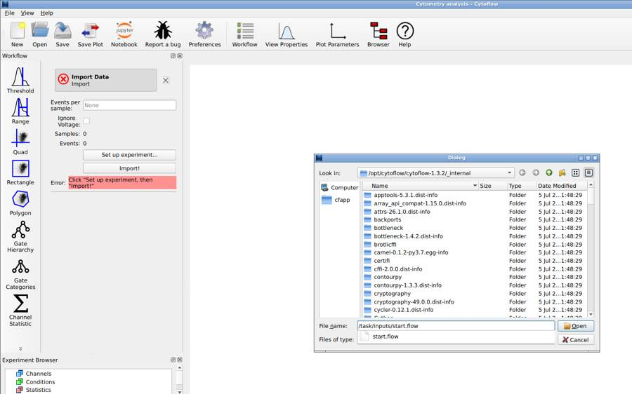
text(await tools.exec_command({cmd:"cu click 1313 744 && sleep 1 && cu screenshot /tmp/screen.png","max_output_tokens":1000}));
image((await tools.view_image({path:"/tmp/screen.png"})).image_url);
Script completed Wall time 1.2 seconds Output:
{"chunk_id":"3f7137","wall_time_seconds":0.99598858,"exit_code":0,"original_token_count":4,"output":"/tmp/screen.png\n"}
text(await tools.exec_command({cmd:"cu click 745 450 && sleep 4 && cu click 47 451 && cu screenshot /tmp/screen.png","max_output_tokens":1000}));
image((await tools.view_image({path:"/tmp/screen.png"})).image_url);
Script completed Wall time 4.3 seconds Output:
{"chunk_id":"7cd8f0","wall_time_seconds":4.099823819,"exit_code":0,"original_token_count":4,"output":"/tmp/screen.png\n"}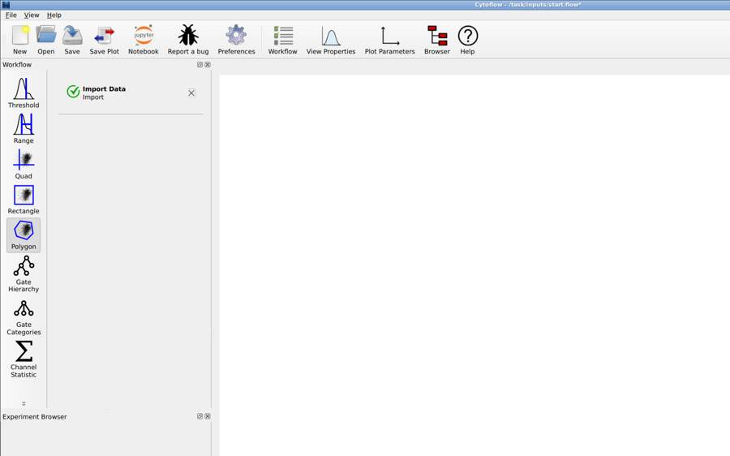
text(await tools.exec_command({cmd:"sleep 3 && cu screenshot /tmp/screen.png","max_output_tokens":1000}));
image((await tools.view_image({path:"/tmp/screen.png"})).image_url);
Script completed Wall time 3.1 seconds Output:
{"chunk_id":"4699a1","wall_time_seconds":2.890593989,"exit_code":0,"original_token_count":4,"output":"/tmp/screen.png\n"}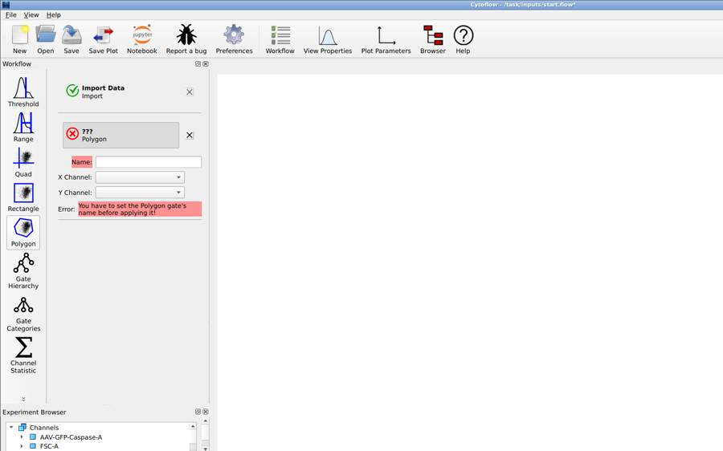
text(await tools.exec_command({cmd:"cu click 280 322 && cu type Cells && cu click 356 355 && cu screenshot /tmp/screen.png","max_output_tokens":1000}));
image((await tools.view_image({path:"/tmp/screen.png"})).image_url);
Script completed Wall time 0.4 seconds Output:
{"chunk_id":"091009","wall_time_seconds":0.22745861,"exit_code":0,"original_token_count":4,"output":"/tmp/screen.png\n"}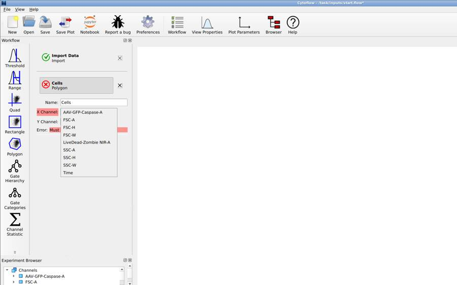
text(await tools.exec_command({cmd:"cu click 223 379 && cu click 355 384 && cu click 231 504 && cu screenshot /tmp/screen.png","max_output_tokens":1000}));
image((await tools.view_image({path:"/tmp/screen.png"})).image_url);
Script completed Wall time 0.4 seconds Output:
{"chunk_id":"edf21f","wall_time_seconds":0.205072729,"exit_code":0,"original_token_count":4,"output":"/tmp/screen.png\n"}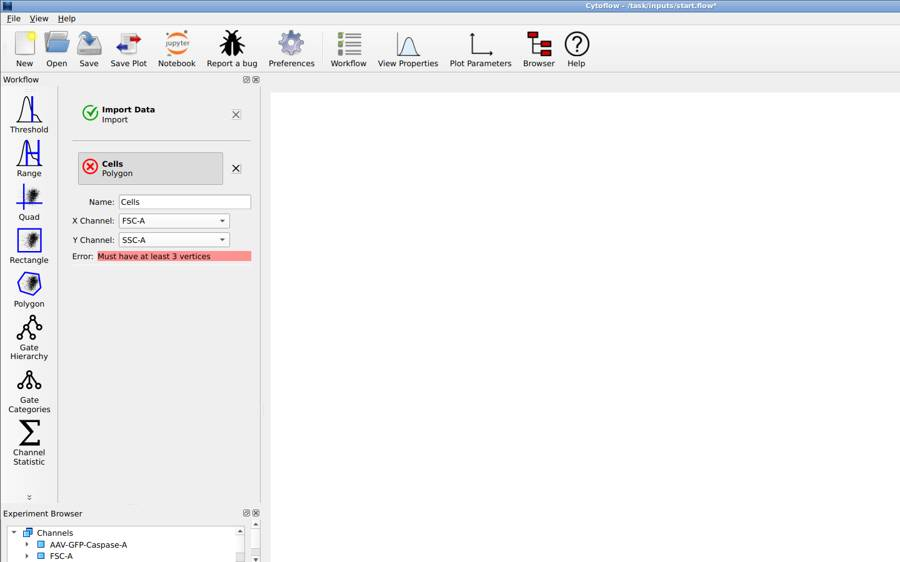
text(await tools.exec_command({cmd:"cu click 653 74 && sleep 2 && cu screenshot /tmp/screen.png","max_output_tokens":1000}));
image((await tools.view_image({path:"/tmp/screen.png"})).image_url);
Script completed Wall time 2.2 seconds Output:
{"chunk_id":"ebcc26","wall_time_seconds":2.040000289,"exit_code":0,"original_token_count":4,"output":"/tmp/screen.png\n"}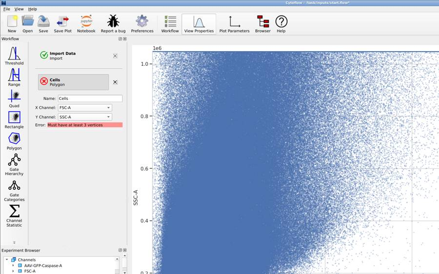
text(await tools.exec_command({cmd:"cu click 652 74 && cu screenshot /tmp/screen.png","max_output_tokens":1000}));
image((await tools.view_image({path:"/tmp/screen.png"})).image_url);
Script completed Wall time 0.2 seconds Output:
{"chunk_id":"f6bc51","wall_time_seconds":0.03096895,"exit_code":0,"original_token_count":4,"output":"/tmp/screen.png\n"}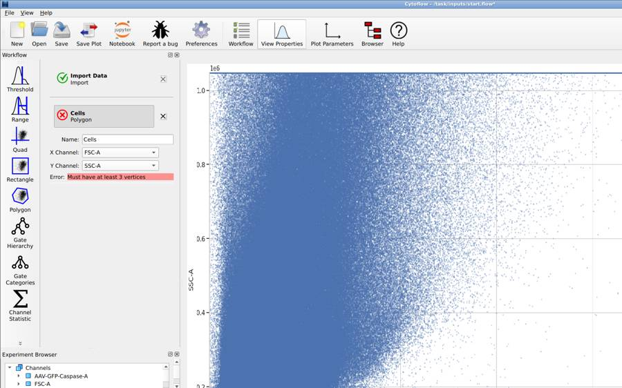
text(await tools.exec_command({cmd:"cu click 700 9 double && cu screenshot /tmp/screen.png","max_output_tokens":1000}));
image((await tools.view_image({path:"/tmp/screen.png"})).image_url);
Script completed Wall time 0.3 seconds Output:
{"chunk_id":"d3e90b","wall_time_seconds":0.11648368,"exit_code":0,"original_token_count":4,"output":"/tmp/screen.png\n"}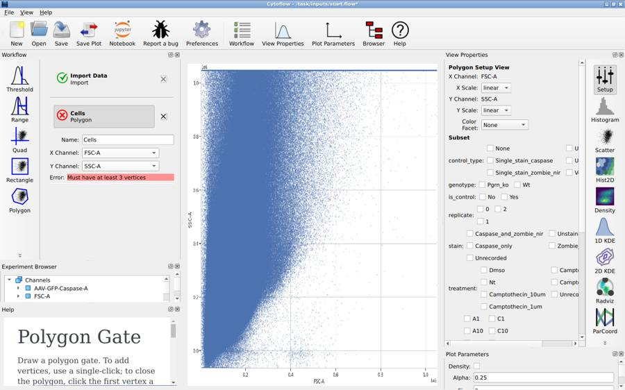
text(await tools.exec_command({cmd:"cu click 1164 203 && cu screenshot /tmp/screen.png","max_output_tokens":1000}));
image((await tools.view_image({path:"/tmp/screen.png"})).image_url);
Script completed Wall time 0.2 seconds Output:
{"chunk_id":"f7e288","wall_time_seconds":0.01085275,"exit_code":0,"original_token_count":4,"output":"/tmp/screen.png\n"}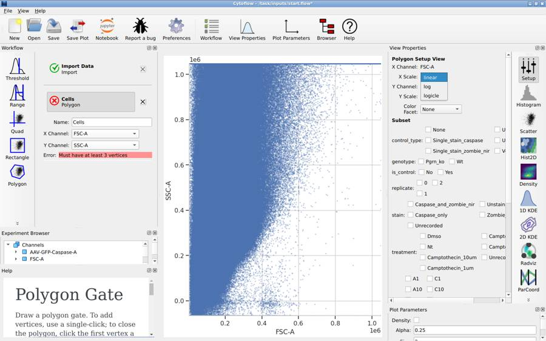
text(await tools.exec_command({cmd:"cu click 1137 251 && cu click 1167 254 && cu click 1134 304 && sleep 2 && cu screenshot /tmp/screen.png","max_output_tokens":1000}));
image((await tools.view_image({path:"/tmp/screen.png"})).image_url);
Script completed Wall time 2.4 seconds Output:
{"chunk_id":"fa7a1b","wall_time_seconds":2.220980369,"exit_code":0,"original_token_count":4,"output":"/tmp/screen.png\n"}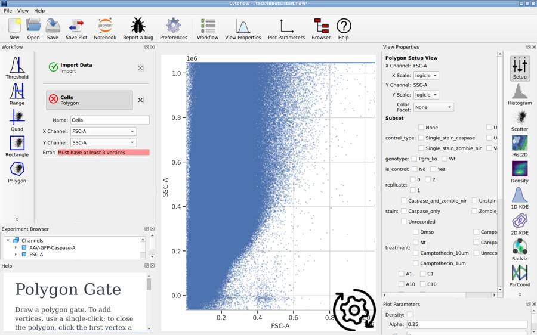
text(await tools.exec_command({cmd:"sleep 3 && cu click 1076 734 && sleep 2 && cu screenshot /tmp/screen.png","max_output_tokens":1000}));
image((await tools.view_image({path:"/tmp/screen.png"})).image_url);
Script completed Wall time 5.2 seconds Output:
{"chunk_id":"54f791","wall_time_seconds":5.013943339,"exit_code":0,"original_token_count":4,"output":"/tmp/screen.png\n"}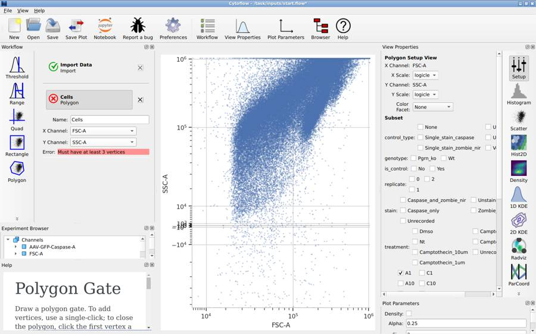
text(await tools.exec_command({cmd:"sleep 3 && cu screenshot /tmp/screen.png","max_output_tokens":1000}));
image((await tools.view_image({path:"/tmp/screen.png"})).image_url);
Script completed Wall time 3.1 seconds Output:
{"chunk_id":"f82566","wall_time_seconds":2.90639694,"exit_code":0,"original_token_count":4,"output":"/tmp/screen.png\n"}text(await tools.exec_command({cmd:"cu click 747 401 && cu click 737 347 && cu click 754 279 && cu click 794 218 && cu click 847 173 && cu click 911 160 && cu click 953 186 && cu click 946 234 && cu click 912 290 && cu click 869 349 && cu click 816 394 && cu click 747 401 double && sleep 2 && cu key ctrl+shift+s && cu screenshot /tmp/screen.png","max_output_tokens":1000}));
image((await tools.view_image({path:"/tmp/screen.png"})).image_url);
Script completed Wall time 3.5 seconds Output:
{"chunk_id":"ebe5a2","wall_time_seconds":3.308880409,"exit_code":0,"original_token_count":4,"output":"/tmp/screen.png\n"}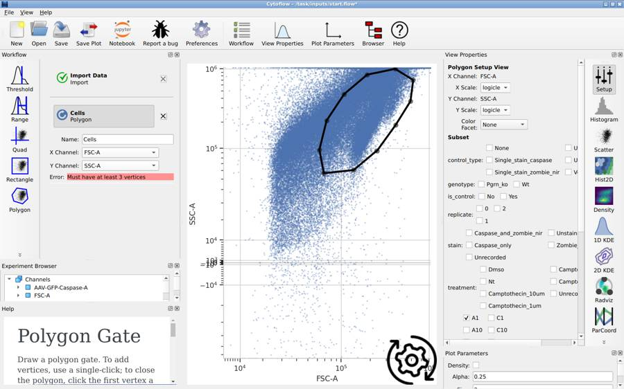
text(await tools.exec_command({cmd:"cu click 20 29 && cu screenshot /tmp/screen.png","max_output_tokens":1000}));
image((await tools.view_image({path:"/tmp/screen.png"})).image_url);
Script completed Wall time 0.2 seconds Output:
{"chunk_id":"7cb8d7","wall_time_seconds":0.00859058,"exit_code":0,"original_token_count":4,"output":"/tmp/screen.png\n"}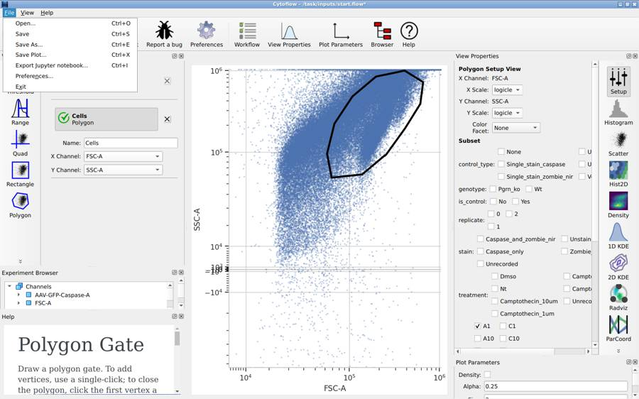
text(await tools.exec_command({cmd:"cu click 61 100 && cu screenshot /tmp/screen.png","max_output_tokens":1000}));
image((await tools.view_image({path:"/tmp/screen.png"})).image_url);
Script completed Wall time 0.2 seconds Output:
{"chunk_id":"bcc278","wall_time_seconds":0.00763005,"exit_code":0,"original_token_count":4,"output":"/tmp/screen.png\n"}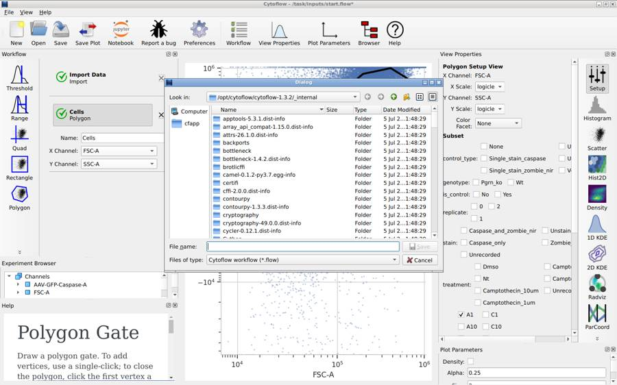
text(await tools.exec_command({cmd:"cu paste /task/outputs/workflow.flow && cu click 978 578 && sleep 1 && cu click 45 453 && sleep 1 && cu screenshot /tmp/screen.png","max_output_tokens":1000}));
image((await tools.view_image({path:"/tmp/screen.png"})).image_url);
Script completed Wall time 3.6 seconds Output:
{"chunk_id":"d9f80a","wall_time_seconds":3.439786559,"exit_code":0,"original_token_count":4,"output":"/tmp/screen.png\n"}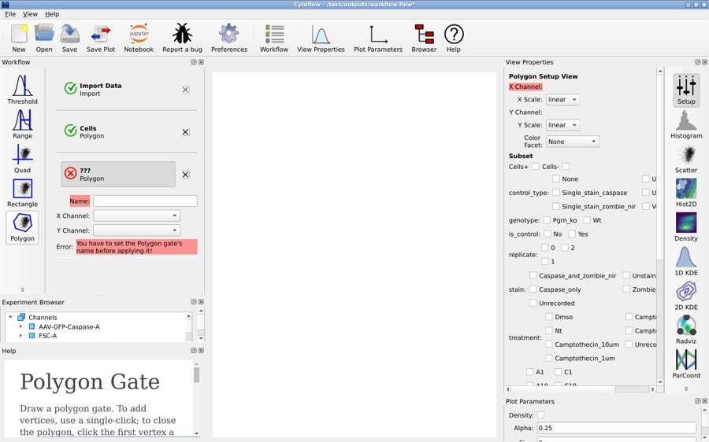
text(await tools.exec_command({cmd:"cu click 280 408 && cu type Single_Cells && cu click 354 439 && cu screenshot /tmp/screen.png","max_output_tokens":1000}));
image((await tools.view_image({path:"/tmp/screen.png"})).image_url);
Script completed Wall time 0.6 seconds Output:
{"chunk_id":"99a1c4","wall_time_seconds":0.41162282,"exit_code":0,"original_token_count":4,"output":"/tmp/screen.png\n"}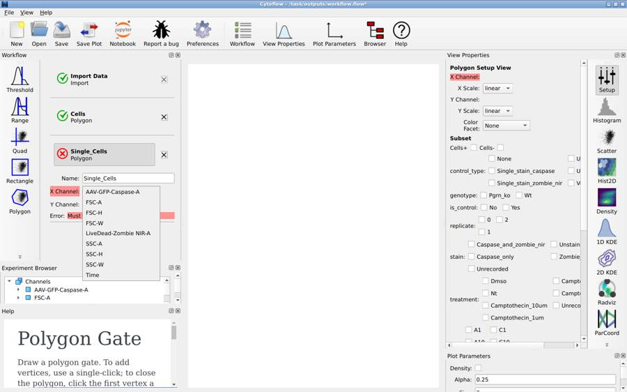
text(await tools.exec_command({cmd:"cu click 219 583 && cu click 354 469 && cu click 220 589 && cu click 1089 338 && sleep 3 && cu screenshot /tmp/screen.png","max_output_tokens":1000}));
image((await tools.view_image({path:"/tmp/screen.png"})).image_url);
Script completed Wall time 3.5 seconds Output:
{"chunk_id":"265f22","wall_time_seconds":3.322499359,"exit_code":0,"original_token_count":4,"output":"/tmp/screen.png\n"}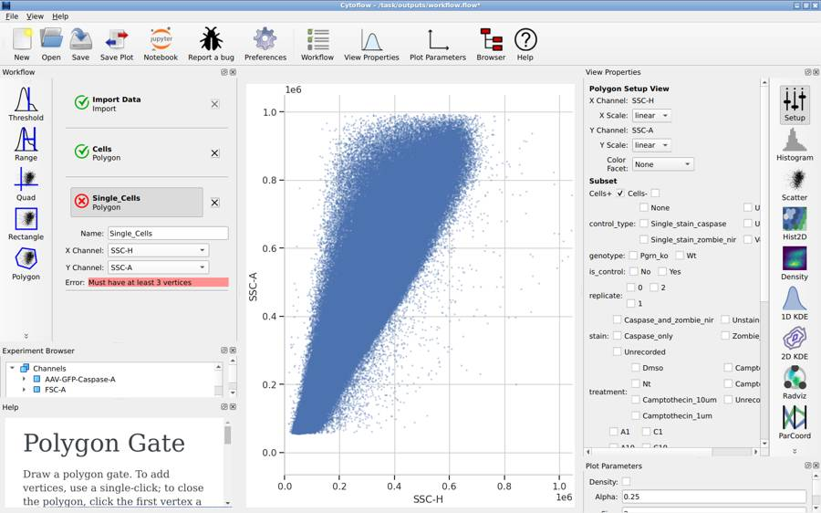
text(await tools.exec_command({cmd:"cu click 513 760 && cu click 550 760 && cu click 843 203 && cu click 687 203 double && sleep 2 && cu click 45 245 && sleep 1 && cu screenshot /tmp/screen.png","max_output_tokens":1000}));
image((await tools.view_image({path:"/tmp/screen.png"})).image_url);
Script completed Wall time 3.7 seconds Output:
{"chunk_id":"96779c","wall_time_seconds":3.523954159,"exit_code":0,"original_token_count":4,"output":"/tmp/screen.png\n"}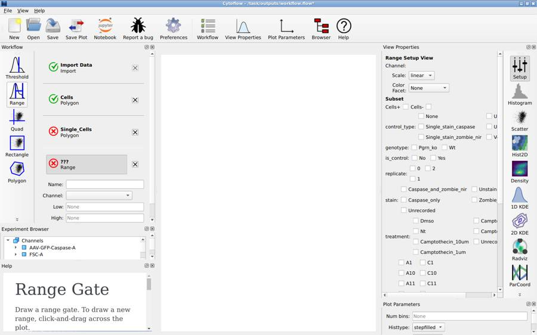
text(await tools.exec_command({cmd:"cu click 220 351 && sleep 2 && cu screenshot /tmp/screen.png","max_output_tokens":1000}));
image((await tools.view_image({path:"/tmp/screen.png"})).image_url);
Script completed Wall time 2.2 seconds Output:
{"chunk_id":"2ab890","wall_time_seconds":2.00865556,"exit_code":0,"original_token_count":4,"output":"/tmp/screen.png\n"}text(await tools.exec_command({cmd:"cu click 513 760 && cu click 550 760 && cu click 843 203 && cu click 687 203 && cu click 513 760 && sleep 2 && cu screenshot /tmp/screen.png","max_output_tokens":1000}));
image((await tools.view_image({path:"/tmp/screen.png"})).image_url);
Script completed Wall time 2.6 seconds Output:
{"chunk_id":"7781e9","wall_time_seconds":2.429489479,"exit_code":0,"original_token_count":4,"output":"/tmp/screen.png\n"}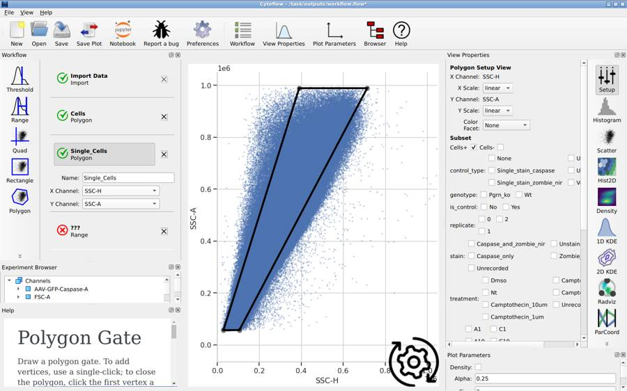
text(await tools.exec_command({cmd:"cu click 208 528 && cu scroll 312 529 down 3 && cu screenshot /tmp/screen.png","max_output_tokens":1000}));
image((await tools.view_image({path:"/tmp/screen.png"})).image_url);
Script completed Wall time 0.5 seconds Output:
{"chunk_id":"4d7716","wall_time_seconds":0.30775901,"exit_code":0,"original_token_count":4,"output":"/tmp/screen.png\n"}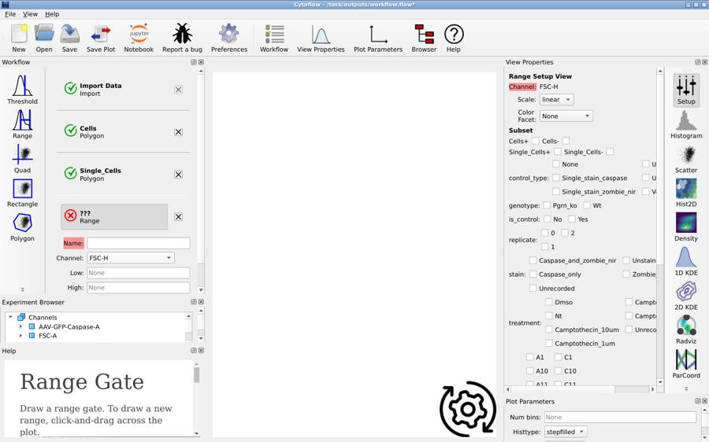
text(await tools.exec_command({cmd:"cu click 275 496 && cu key ctrl+a && cu type Live && cu click 342 525 && cu screenshot /tmp/screen.png","max_output_tokens":1000}));
image((await tools.view_image({path:"/tmp/screen.png"})).image_url);
Script completed Wall time 0.4 seconds Output:
{"chunk_id":"30ccd3","wall_time_seconds":0.23875165,"exit_code":0,"original_token_count":4,"output":"/tmp/screen.png\n"}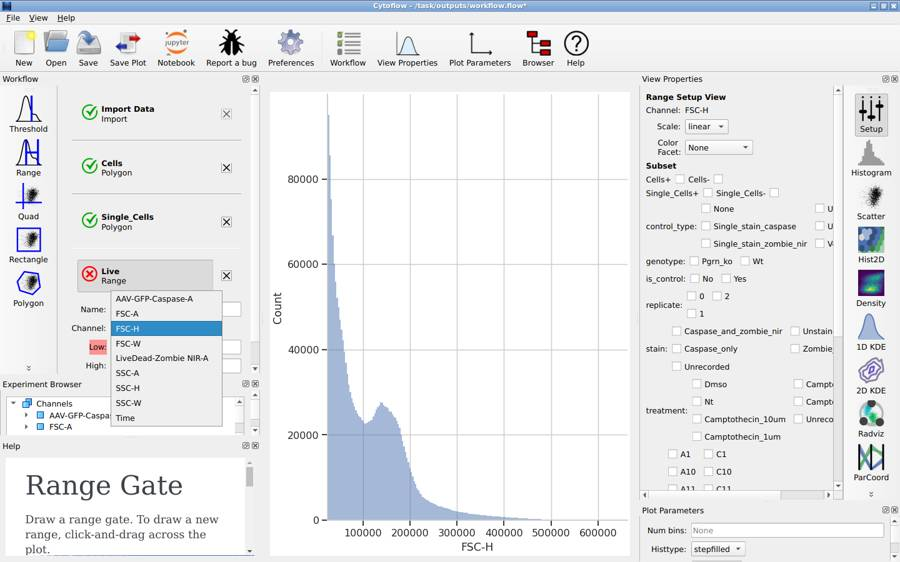
text(await tools.exec_command({cmd:"cu click 266 573 && cu click 1152 203 && cu key End && cu key Return && cu click 1089 286 && cu click 1132 309 && cu click 1076 726 && cu click 1134 726 && sleep 3 && cu screenshot /tmp/screen.png","max_output_tokens":1000}));
image((await tools.view_image({path:"/tmp/screen.png"})).image_url);
Script completed Wall time 3.7 seconds Output:
{"chunk_id":"42a90e","wall_time_seconds":3.556456379,"exit_code":0,"original_token_count":4,"output":"/tmp/screen.png\n"}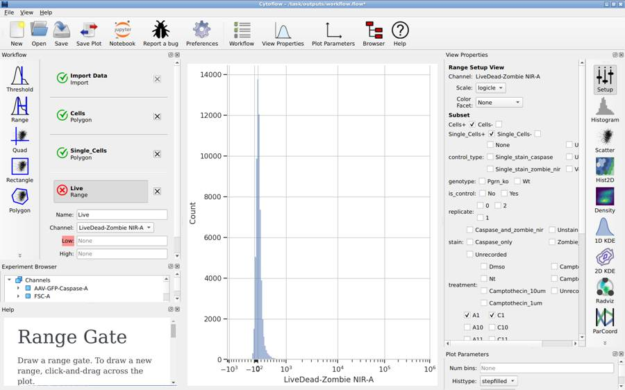
text(await tools.exec_command({cmd:"cu click 1191 236 && cu screenshot /tmp/screen.png","max_output_tokens":1000}));
image((await tools.view_image({path:"/tmp/screen.png"})).image_url);
Script completed Wall time 0.2 seconds Output:
{"chunk_id":"8d8156","wall_time_seconds":0.00314332,"exit_code":0,"original_token_count":4,"output":"/tmp/screen.png\n"}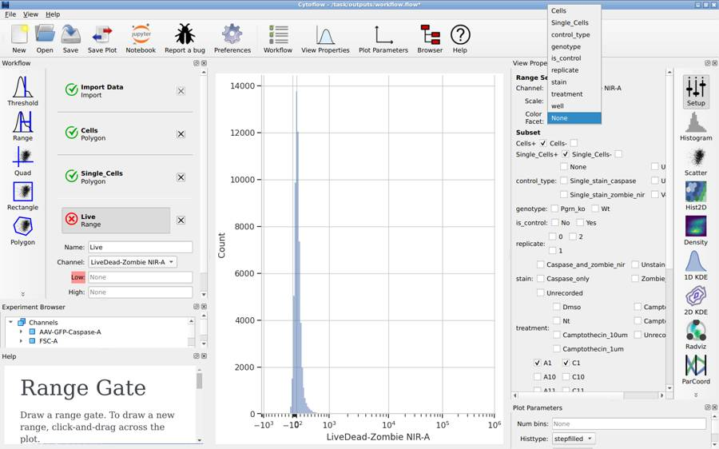
text(await tools.exec_command({cmd:"cu click 1119 211 && cu scroll 1258 731 down 5 && sleep 2 && cu screenshot /tmp/screen.png","max_output_tokens":1000}));
image((await tools.view_image({path:"/tmp/screen.png"})).image_url);
Script completed Wall time 2.7 seconds Output:
{"chunk_id":"6def55","wall_time_seconds":2.509801339,"exit_code":0,"original_token_count":4,"output":"/tmp/screen.png\n"}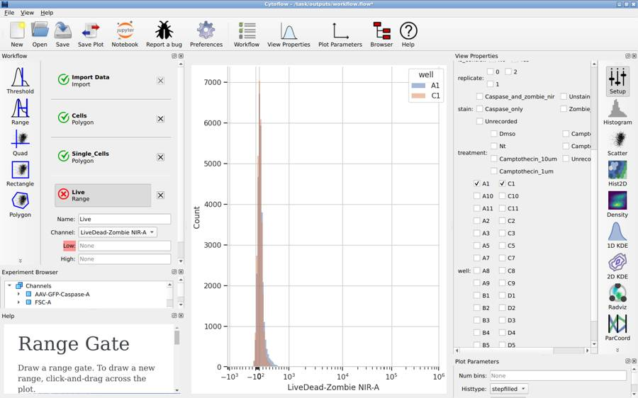
text(await tools.exec_command({cmd:"cu click 1076 527 && cu click 1134 527 && sleep 2 && cu screenshot /tmp/screen.png","max_output_tokens":1000}));
image((await tools.view_image({path:"/tmp/screen.png"})).image_url);
Script completed Wall time 2.3 seconds Output:
{"chunk_id":"25b2e9","wall_time_seconds":2.111636469,"exit_code":0,"original_token_count":4,"output":"/tmp/screen.png\n"}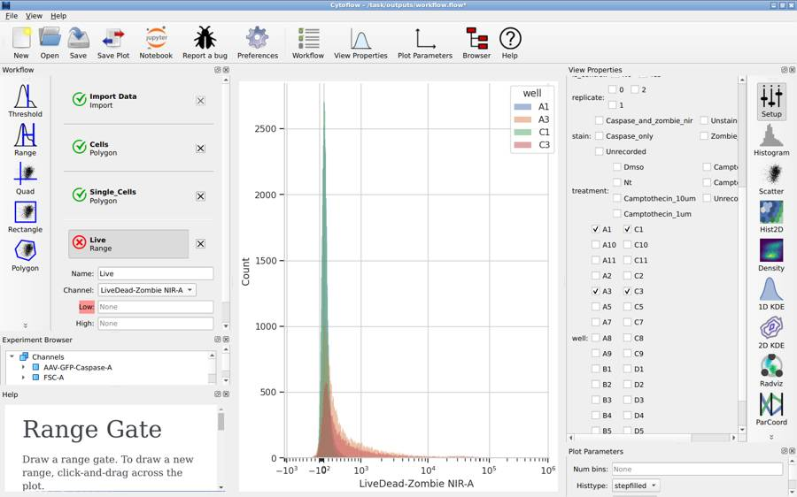
text(await tools.exec_command({cmd:"cu click 1076 415 && cu click 1134 415 && cu click 1076 527 && sleep 2 && cu screenshot /tmp/screen.png","max_output_tokens":1000}));
image((await tools.view_image({path:"/tmp/screen.png"})).image_url);
Script completed Wall time 2.4 seconds Output:
{"chunk_id":"e96ac1","wall_time_seconds":2.2129130200000002,"exit_code":0,"original_token_count":4,"output":"/tmp/screen.png\n"}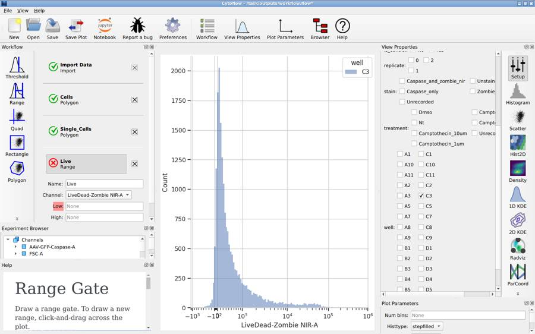
text(await tools.exec_command({cmd:"cu click 1134 527 && cu click 1076 724 && cu click 1134 724 && sleep 2 && cu screenshot /tmp/screen.png","max_output_tokens":1000}));
image((await tools.view_image({path:"/tmp/screen.png"})).image_url);
Script completed Wall time 2.4 seconds Output:
{"chunk_id":"e17649","wall_time_seconds":2.21594053,"exit_code":0,"original_token_count":4,"output":"/tmp/screen.png\n"}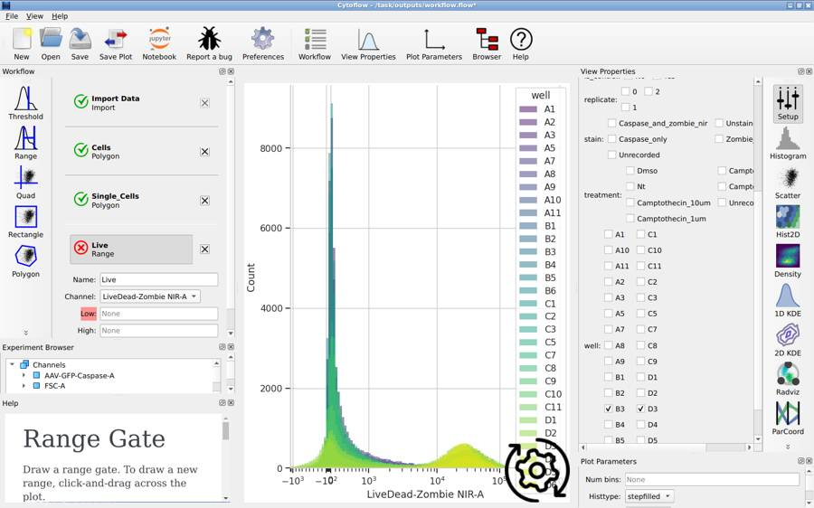
text(await tools.exec_command({cmd:"sleep 3 && cu screenshot /tmp/screen.png","max_output_tokens":1000}));
image((await tools.view_image({path:"/tmp/screen.png"})).image_url);
Script completed Wall time 3.1 seconds Output:
{"chunk_id":"dd0e44","wall_time_seconds":2.899038739,"exit_code":0,"original_token_count":4,"output":"/tmp/screen.png\n"}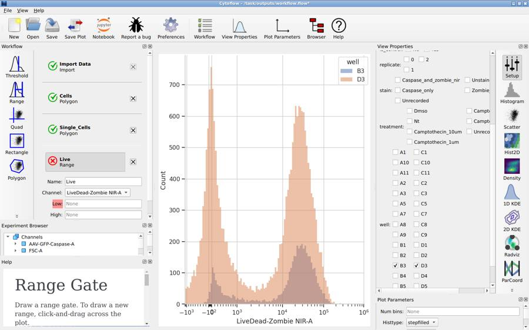
text(await tools.exec_command({cmd:"cu click 255 556 && cu key ctrl+a && cu type -1048576 && cu key Tab && cu key ctrl+a && cu type 3000 && cu key Tab && sleep 2 && cu click 45 175 && sleep 1 && cu screenshot /tmp/screen.png","max_output_tokens":1000}));
image((await tools.view_image({path:"/tmp/screen.png"})).image_url);
Script completed Wall time 3.7 seconds Output:
{"chunk_id":"842ff2","wall_time_seconds":3.505796819,"exit_code":0,"original_token_count":4,"output":"/tmp/screen.png\n"}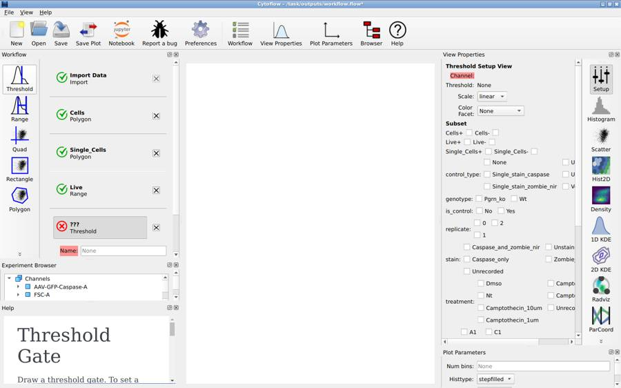
text(await tools.exec_command({cmd:"cu click 409 714 && cu click 409 614 && cu screenshot /tmp/screen.png","max_output_tokens":1000}));
image((await tools.view_image({path:"/tmp/screen.png"})).image_url);
Script completed Wall time 0.3 seconds Output:
{"chunk_id":"827270","wall_time_seconds":0.10860919,"exit_code":0,"original_token_count":4,"output":"/tmp/screen.png\n"}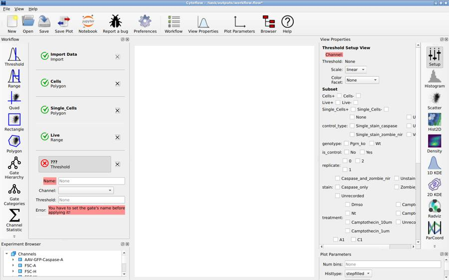
text(await tools.exec_command({cmd:"cu click 408 785 && cu click 288 582 && cu key ctrl+a && cu type Caspase_pos && cu click 352 612 && cu key Home && cu key Return && cu click 1166 224 && cu key End && cu key Return && cu click 1089 307 && cu click 1084 329 && cu click 1132 351 && cu click 1075 769 && cu click 1133 769 && cu scroll 1254 728 down 5 && sleep 2 && cu screenshot /tmp/screen.png","max_output_tokens":1000}));
image((await tools.view_image({path:"/tmp/screen.png"})).image_url);
Script completed Wall time 3.9 seconds Output:
{"chunk_id":"46468a","wall_time_seconds":3.719883099,"exit_code":0,"original_token_count":4,"output":"/tmp/screen.png\n"}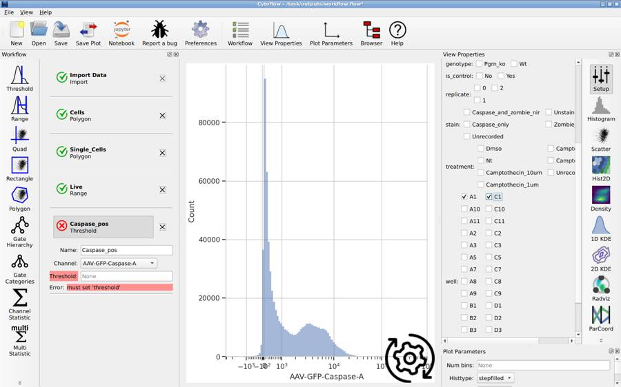
text(await tools.exec_command({cmd:"cu click 1075 542 && cu click 1133 542 && cu scroll 1258 350 up 12 && sleep 3 && cu screenshot /tmp/screen.png","max_output_tokens":1000}));
image((await tools.view_image({path:"/tmp/screen.png"})).image_url);
Script completed Wall time 4.5 seconds Output:
{"chunk_id":"a2fea1","wall_time_seconds":4.315598029,"exit_code":0,"original_token_count":4,"output":"/tmp/screen.png\n"}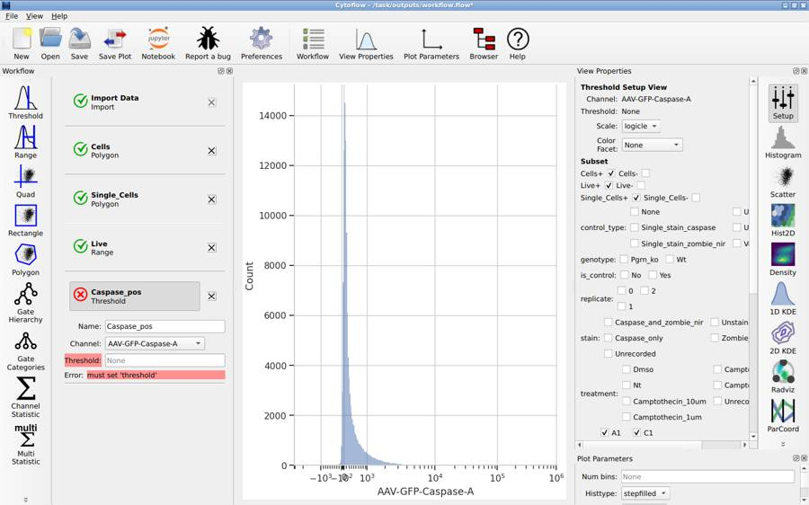
text(await tools.exec_command({cmd:"cu click 1203 257 && cu key End && cu key Up && cu key Return && sleep 3 && cu screenshot /tmp/screen.png","max_output_tokens":1000}));
image((await tools.view_image({path:"/tmp/screen.png"})).image_url);
Script completed Wall time 3.2 seconds Output:
{"chunk_id":"4e5ae1","wall_time_seconds":3.050006469,"exit_code":0,"original_token_count":4,"output":"/tmp/screen.png\n"}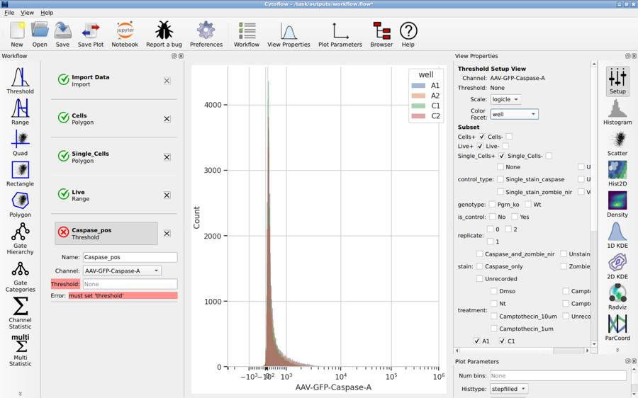
text(await tools.exec_command({cmd:"cu click 271 642 && cu key ctrl+a && cu type 3000 && cu key Tab && cu key ctrl+s && cu click 47 696 && sleep 2 && cu screenshot /tmp/screen.png","max_output_tokens":1000}));
image((await tools.view_image({path:"/tmp/screen.png"})).image_url);
Script completed Wall time 2.5 seconds Output:
{"chunk_id":"7acafb","wall_time_seconds":2.28051342,"exit_code":0,"original_token_count":4,"output":"/tmp/screen.png\n"}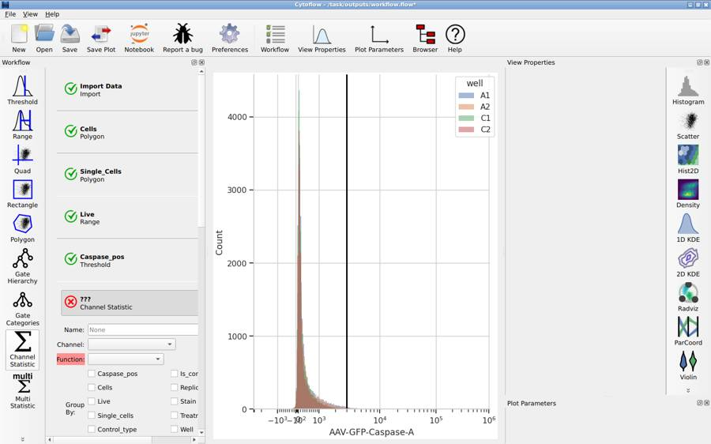
text(await tools.exec_command({cmd:"cu click 278 668 && cu key ctrl+a && cu type AllEventsCount && cu click 343 698 && cu key Home && cu key Down && cu key Return && cu click 319 729 && cu screenshot /tmp/screen.png","max_output_tokens":1000}));
image((await tools.view_image({path:"/tmp/screen.png"})).image_url);
Script completed Wall time 0.8 seconds Output:
{"chunk_id":"cd1307","wall_time_seconds":0.63739273,"exit_code":0,"original_token_count":4,"output":"/tmp/screen.png\n"}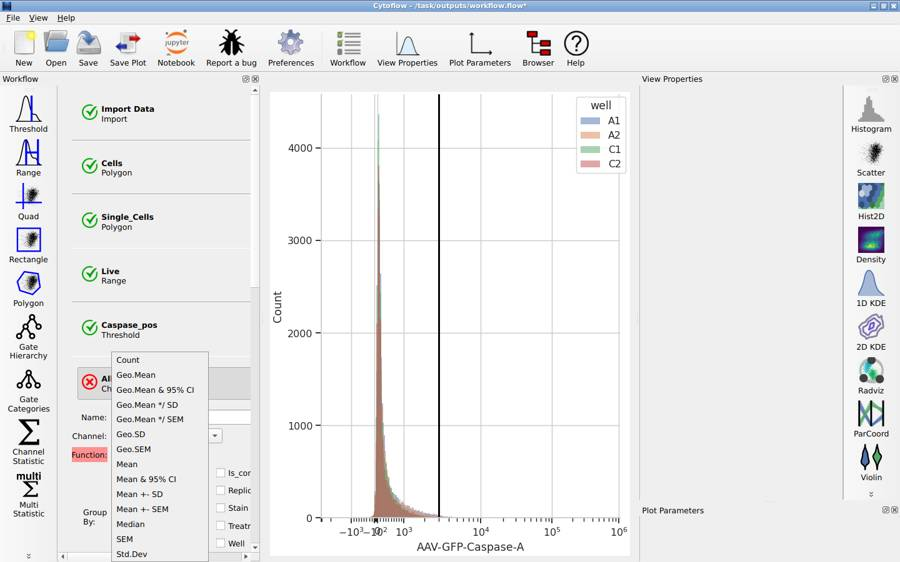
text(await tools.exec_command({cmd:"cu click 211 576 && cu click 353 869 && cu scroll 385 787 down 5 && sleep 2 && cu screenshot /tmp/screen.png","max_output_tokens":1000}));
image((await tools.view_image({path:"/tmp/screen.png"})).image_url);
Script completed Wall time 2.8 seconds Output:
{"chunk_id":"bb3e64","wall_time_seconds":2.610476609,"exit_code":0,"original_token_count":4,"output":"/tmp/screen.png\n"}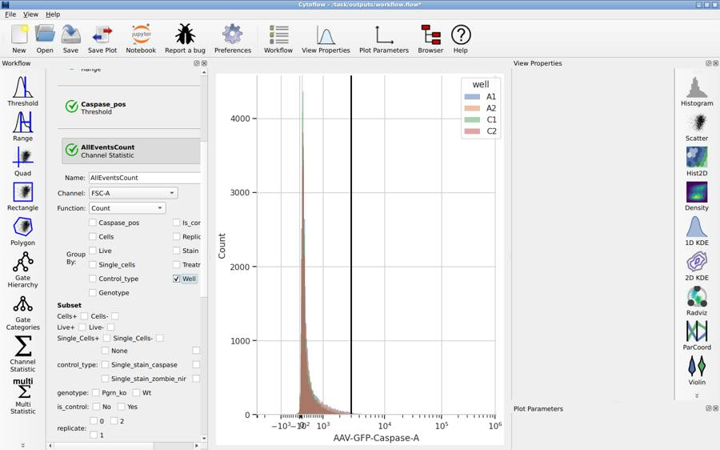
text(await tools.exec_command({cmd:"cu scroll 1394 746 down 5 && cu screenshot /tmp/screen.png","max_output_tokens":1000}));
image((await tools.view_image({path:"/tmp/screen.png"})).image_url);
Script completed Wall time 0.6 seconds Output:
{"chunk_id":"45ea29","wall_time_seconds":0.40099293,"exit_code":0,"original_token_count":4,"output":"/tmp/screen.png\n"}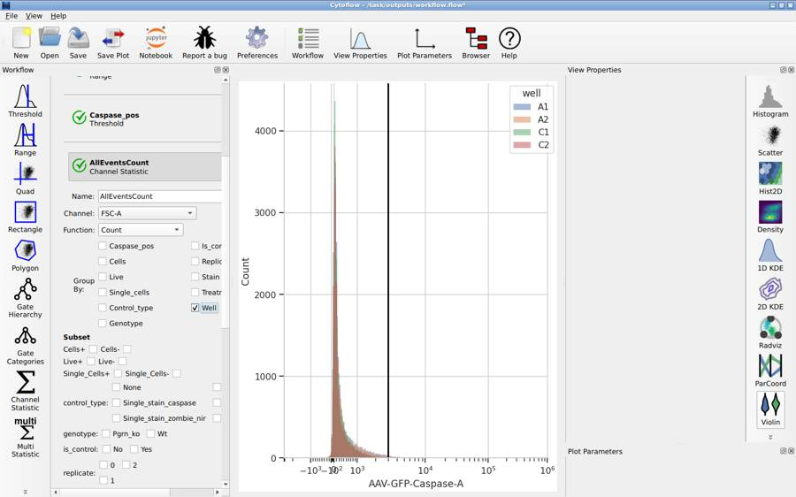
text(await tools.exec_command({cmd:"cu click 1394 791 && cu click 1394 791 && cu click 1394 791 && cu screenshot /tmp/screen.png","max_output_tokens":1000}));
image((await tools.view_image({path:"/tmp/screen.png"})).image_url);
Script completed Wall time 0.4 seconds Output:
{"chunk_id":"437ac8","wall_time_seconds":0.20560504,"exit_code":0,"original_token_count":4,"output":"/tmp/screen.png\n"}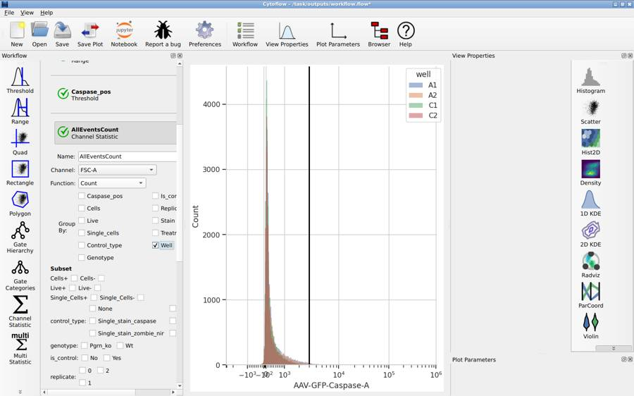
text(await tools.exec_command({cmd:"cu click 1425 791 && cu screenshot /tmp/screen.png","max_output_tokens":1000}));
image((await tools.view_image({path:"/tmp/screen.png"})).image_url);
Script completed Wall time 0.2 seconds Output:
{"chunk_id":"50665b","wall_time_seconds":0.00000512,"exit_code":0,"original_token_count":4,"output":"/tmp/screen.png\n"}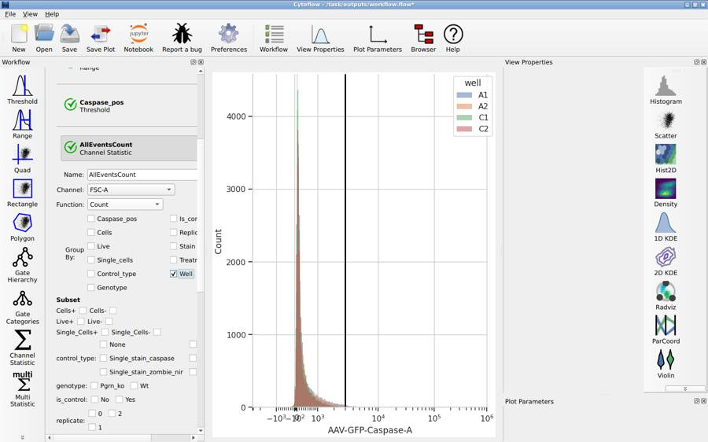
text(await tools.exec_command({cmd:"cu key Escape && cu click 1430 816 && cu screenshot /tmp/screen.png","max_output_tokens":1000}));
image((await tools.view_image({path:"/tmp/screen.png"})).image_url);
Script completed Wall time 0.2 seconds Output:
{"chunk_id":"67f67d","wall_time_seconds":0.01355022,"exit_code":0,"original_token_count":4,"output":"/tmp/screen.png\n"}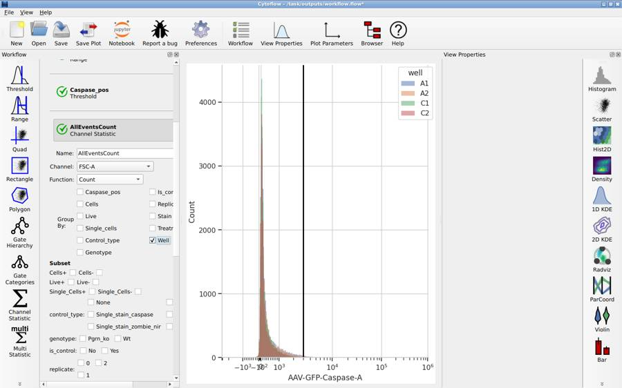
text(await tools.exec_command({cmd:"cu click 61 29 && cu screenshot /tmp/screen.png","max_output_tokens":1000}));
image((await tools.view_image({path:"/tmp/screen.png"})).image_url);
Script completed Wall time 0.2 seconds Output:
{"chunk_id":"664560","wall_time_seconds":0.00000417,"exit_code":0,"original_token_count":4,"output":"/tmp/screen.png\n"}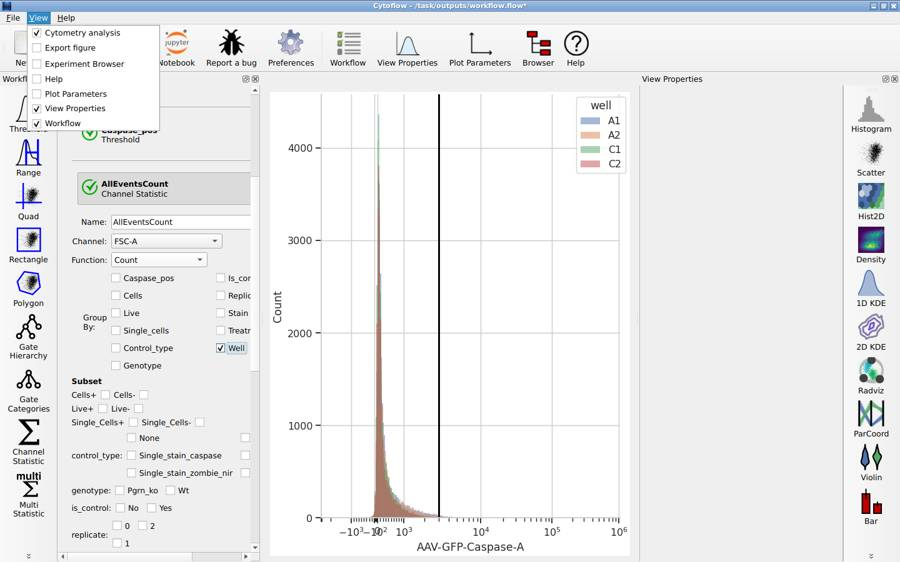
text(await tools.exec_command({cmd:"cu key Escape && cu drag 1393 143 901 884 && cu screenshot /tmp/screen.png","max_output_tokens":1000}));
image((await tools.view_image({path:"/tmp/screen.png"})).image_url);
Script completed Wall time 0.1 seconds Output:
{"chunk_id":"2f9696","wall_time_seconds":0.00000401,"exit_code":0,"original_token_count":4,"output":"/tmp/screen.png\n"}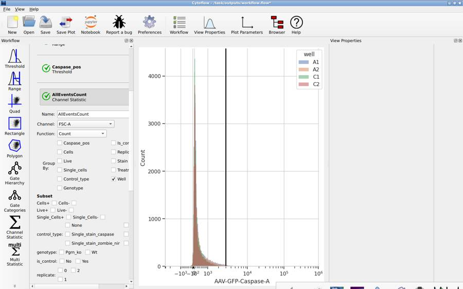
text(await tools.exec_command({cmd:"cu drag 922 883 600 360 && cu screenshot /tmp/screen.png","max_output_tokens":1000}));
image((await tools.view_image({path:"/tmp/screen.png"})).image_url);
Script completed Wall time 0.1 seconds Output:
{"chunk_id":"8f63fa","wall_time_seconds":0.00000483,"exit_code":0,"original_token_count":4,"output":"/tmp/screen.png\n"}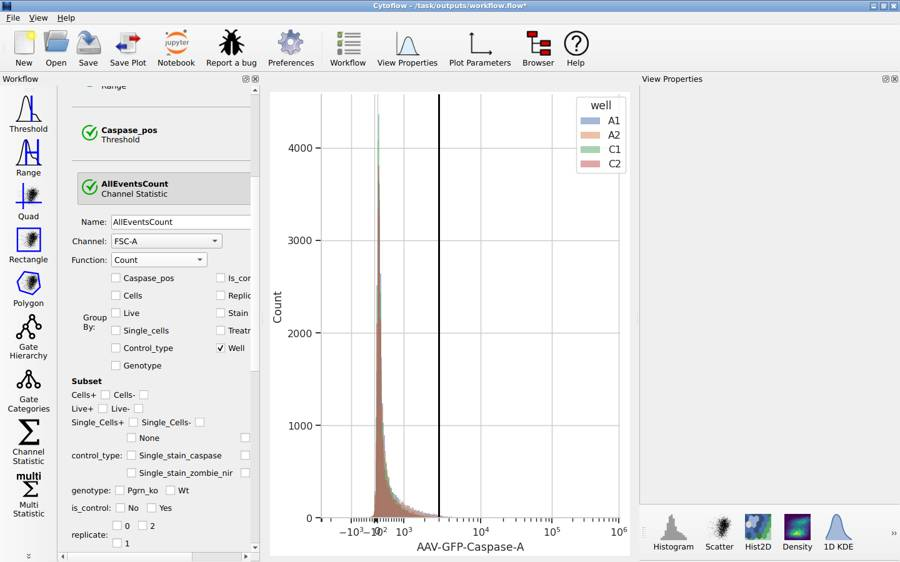
text(await tools.exec_command({cmd:"cu click 1430 853 && cu screenshot /tmp/screen.png","max_output_tokens":1000}));
image((await tools.view_image({path:"/tmp/screen.png"})).image_url);
Script completed Wall time 0.2 seconds Output:
{"chunk_id":"82589c","wall_time_seconds":0.00000455,"exit_code":0,"original_token_count":4,"output":"/tmp/screen.png\n"}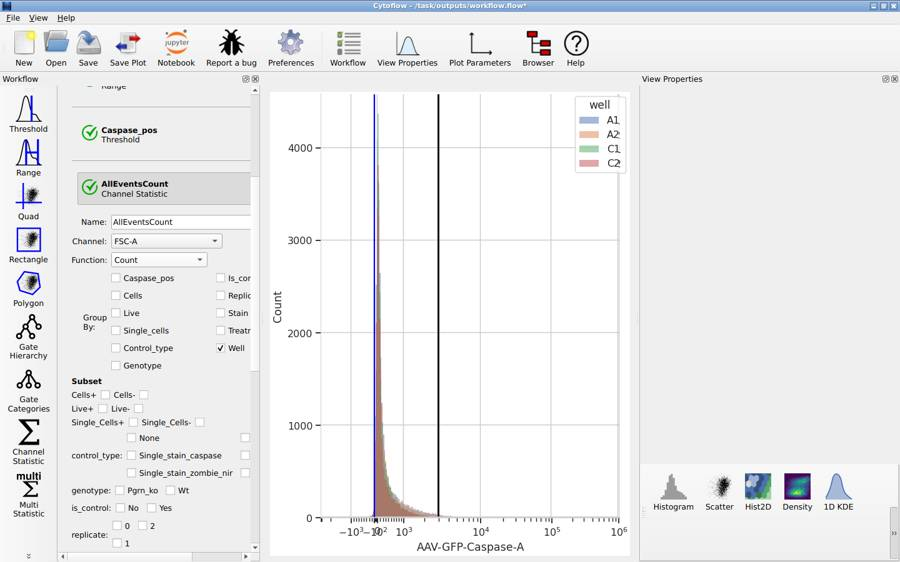
text(await tools.exec_command({cmd:"cu key Escape && cu drag 1031 852 600 400 && cu screenshot /tmp/screen.png","max_output_tokens":1000}));
image((await tools.view_image({path:"/tmp/screen.png"})).image_url);
Script completed Wall time 0.1 seconds Output:
{"chunk_id":"aeb363","wall_time_seconds":0.00000497,"exit_code":0,"original_token_count":4,"output":"/tmp/screen.png\n"}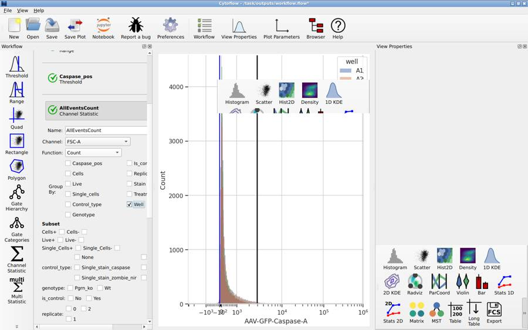
text(await tools.exec_command({cmd:"cu click 1294 845 && sleep 1 && cu screenshot /tmp/screen.png","max_output_tokens":1000}));
image((await tools.view_image({path:"/tmp/screen.png"})).image_url);
Script completed Wall time 1.2 seconds Output:
{"chunk_id":"b30e85","wall_time_seconds":0.99924504,"exit_code":0,"original_token_count":4,"output":"/tmp/screen.png\n"}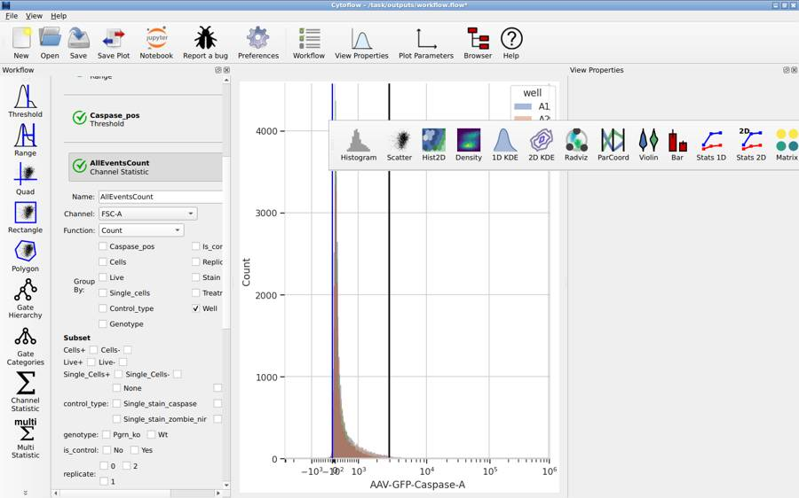
text(await tools.exec_command({cmd:"cu drag 598 264 5 760 && sleep 1 && cu screenshot /tmp/screen.png","max_output_tokens":1000}));
image((await tools.view_image({path:"/tmp/screen.png"})).image_url);
Script completed Wall time 1.1 seconds Output:
{"chunk_id":"bf9183","wall_time_seconds":0.89898752,"exit_code":0,"original_token_count":4,"output":"/tmp/screen.png\n"}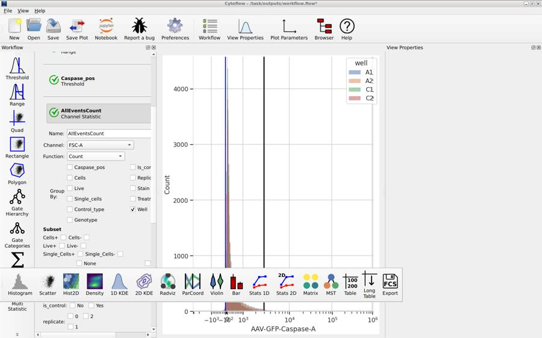
text(await tools.exec_command({cmd:"cu click 981 755 && sleep 2 && cu screenshot /tmp/screen.png","max_output_tokens":1000}));
image((await tools.view_image({path:"/tmp/screen.png"})).image_url);
Script completed Wall time 2.2 seconds Output:
{"chunk_id":"249443","wall_time_seconds":2.00027792,"exit_code":0,"original_token_count":4,"output":"/tmp/screen.png\n"}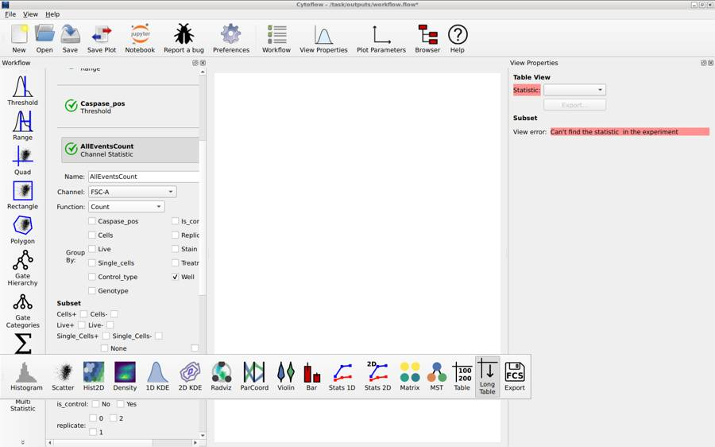
text(await tools.exec_command({cmd:"cu click 271 356 && cu key ctrl+a && cu type GateCounts && cu key Tab && cu click 185 444 && cu click 185 473 && cu click 185 501 && cu click 185 529 && cu click 1207 181 && cu screenshot /tmp/screen.png","max_output_tokens":1000}));
image((await tools.view_image({path:"/tmp/screen.png"})).image_url);
Script completed Wall time 1.0 seconds Output:
{"chunk_id":"3be0e5","wall_time_seconds":0.821831769,"exit_code":0,"original_token_count":4,"output":"/tmp/screen.png\n"}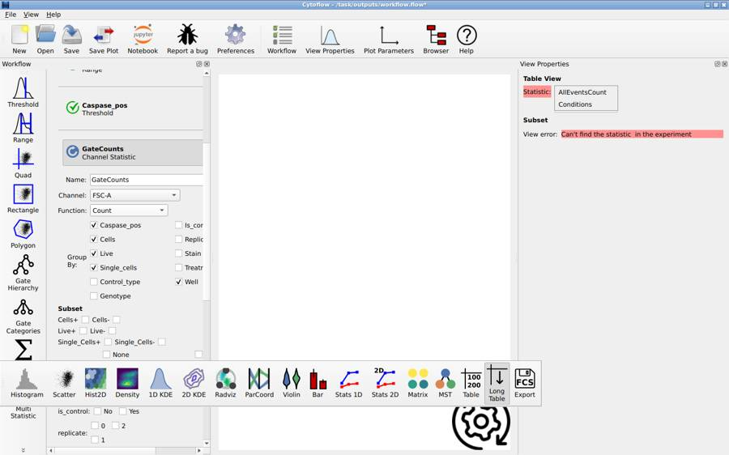
text(await tools.exec_command({cmd:"cu key Escape && sleep 3 && cu click 1208 181 && cu screenshot /tmp/screen.png","max_output_tokens":1000}));
image((await tools.view_image({path:"/tmp/screen.png"})).image_url);
Script completed Wall time 3.2 seconds Output:
{"chunk_id":"38297c","wall_time_seconds":3.012623279,"exit_code":0,"original_token_count":4,"output":"/tmp/screen.png\n"}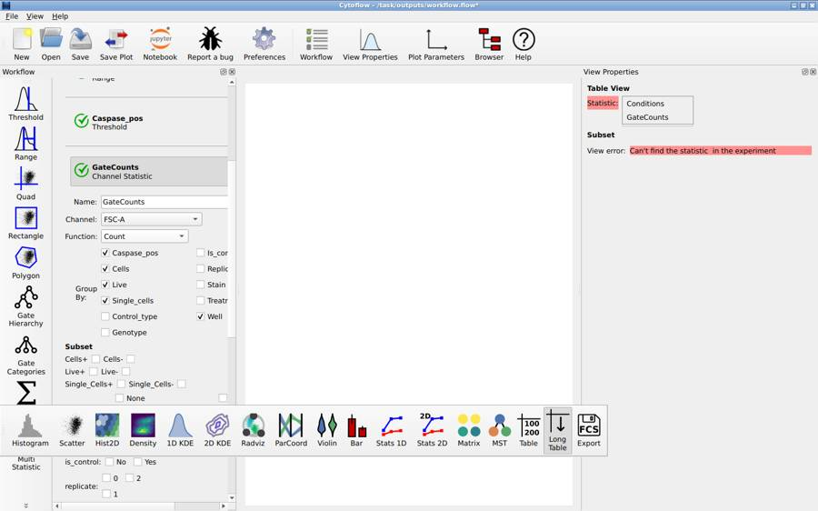
text(await tools.exec_command({cmd:"cu click 1139 205 && sleep 2 && cu click 1163 211 && cu screenshot /tmp/screen.png","max_output_tokens":1000}));
image((await tools.view_image({path:"/tmp/screen.png"})).image_url);
Script completed Wall time 2.3 seconds Output:
{"chunk_id":"7f8b96","wall_time_seconds":2.111240199,"exit_code":0,"original_token_count":4,"output":"/tmp/screen.png\n"}text(await tools.exec_command({cmd:"cu paste /task/outputs/gate_counts_export.csv && cu click 983 569 && cu key ctrl+s && sleep 1","max_output_tokens":1000}));
text(await tools.exec_command({cmd:"head -8 /task/outputs/gate_counts_export.csv && ls -l /task/outputs","max_output_tokens":1500}));
Script completed
Wall time 2.5 seconds
Output:
{"chunk_id":"6bde81","wall_time_seconds":2.312381959,"exit_code":0,"original_token_count":0,"output":""}
{"chunk_id":"a53bef","wall_time_seconds":0.00000393,"exit_code":0,"original_token_count":78,"output":"well,Caspase_pos,Cells,Live,Single_Cells,FSC-A\nA1,0,0,1,0,25643.0\nA1,0,0,1,1,20808.0\nA1,0,1,0,1,1.0\nA1,0,1,1,0,2000.0\nA1,0,1,1,1,29311.0\nA1,1,0,0,0,1034.0\nA1,1,0,1,0,11310.0\ntotal 148\n-rw-rw-r-- 1 cfapp task 8189 Nov 5 08:22 gate_counts_export.csv\n-rw-rw-r-- 1 cfapp task 140627 Nov 5 08:22 workflow.flow\n"}text(await tools.exec_command({cmd:"python - <<'PY'\nimport pandas as pd\np=pd.read_csv('/task/inputs/plate_layout.csv')\ng=pd.read_csv('/task/outputs/gate_counts_export.csv')\nrows=[]; summary=[]\nfor x in p.itertuples(index=False):\n d=g[g.well.eq(x.well)]; parent=int(d['FSC-A'].sum()); vals=[parent]; mask=pd.Series(True,index=d.index)\n for pop,par in [('Cells','all_events'),('Single_Cells','Cells'),('Live','Single_Cells'),('Caspase_pos','Live')]:\n mask &= d[pop].eq(1); n=int(d.loc[mask,'FSC-A'].sum());rows.append([x.file,x.well,pop,n,par,100*n/parent if parent else 0.0]); parent=n;vals.append(n)\n summary.append([x.well,*vals])\npd.DataFrame(rows,columns=['file','well','population','count','parent_population','pct_of_parent']).to_csv('/task/outputs/counts.csv',index=False)\ns=pd.DataFrame(summary,columns=['well','all','Cells','Single_Cells','Live','Caspase_pos']);s['Live%']=s.Live/s.Single_Cells*100;s['Caspase%']=s.Caspase_pos/s.Live*100\nprint(s.to_string(index=False,float_format=lambda x:f'{x:.2f}'))\nPY","max_output_tokens":4000}));
text(await tools.clock__curr_time({}));
Script completed
Wall time 0.0 seconds
Output:
{"chunk_id":"cc3abc","wall_time_seconds":0.00000493,"exit_code":127,"original_token_count":12,"output":"/bin/bash: line 1: python: command not found\n"}
{"current_time":"2026-11-05 08:22:41 UTC"}text(await tools.exec_command({cmd:"python3 - <<'PY'\nimport pandas as pd\np=pd.read_csv('/task/inputs/plate_layout.csv');g=pd.read_csv('/task/outputs/gate_counts_export.csv');rows=[];summary=[]\nfor x in p.itertuples(index=False):\n d=g[g.well.eq(x.well)]; parent=int(d['FSC-A'].sum()); vals=[parent]; mask=pd.Series(True,index=d.index)\n for pop,par in [('Cells','all_events'),('Single_Cells','Cells'),('Live','Single_Cells'),('Caspase_pos','Live')]:\n mask &= d[pop].eq(1); n=int(d.loc[mask,'FSC-A'].sum());rows.append([x.file,x.well,pop,n,par,100*n/parent if parent else 0.0]); parent=n;vals.append(n)\n summary.append([x.well,*vals])\npd.DataFrame(rows,columns=['file','well','population','count','parent_population','pct_of_parent']).to_csv('/task/outputs/counts.csv',index=False)\ns=pd.DataFrame(summary,columns=['well','all','Cells','Single_Cells','Live','Caspase_pos']);s['Live%']=s.Live/s.Single_Cells*100;s['Caspase%']=s.Caspase_pos/s.Live*100\ns.to_csv('/task/outputs/qc_summary.csv',index=False)\nprint(s.to_string(index=False,float_format=lambda x:f'{x:.2f}'))\nPY","max_output_tokens":4000}));
Script completed
Wall time 0.4 seconds
Output:
{"chunk_id":"e2d00d","wall_time_seconds":0.2690202,"exit_code":0,"original_token_count":535,"output":"well all Cells Single_Cells Live Caspase_pos Live% Caspase%\n A1 90651 31753 29714 29713 402 100.00 1.35\n A2 81008 27147 24753 24753 271 100.00 1.09\n A3 95933 33980 31583 29336 5883 92.89 20.05\n A5 73753 24446 22138 16603 3394 75.00 20.44\n A7 64975 21884 20274 18454 5436 91.02 29.46\n A8 60216 20321 18945 16789 4889 88.62 29.12\n A9 80278 29965 27858 24344 7205 87.39 29.60\n A10 64936 23333 21260 14768 3052 69.46 20.67\n A11 68296 22977 21197 16311 3843 76.95 23.56\n B1 58310 19281 17402 10147 2436 58.31 24.01\n B2 51930 16282 14859 8578 1246 57.73 14.53\n B3 13995 5105 4480 1048 288 23.39 27.48\n B4 58782 18362 16400 7775 1453 47.41 18.69\n B5 33754 10292 8696 204 65 2.35 31.86\n B6 8004 3056 2762 163 73 5.90 44.79\n C1 95817 31224 29431 29430 61 100.00 0.21\n C2 80166 26706 25091 25091 65 100.00 0.26\n C3 68270 20426 18884 17370 2897 91.98 16.68\n C5 88646 29839 28053 25724 5632 91.70 21.89\n C7 119052 32608 29774 28082 11447 94.32 40.76\n C8 52267 14584 13632 12047 2781 88.37 23.08\n C9 92282 28479 26727 24531 6924 91.78 28.23\n C10 88797 26467 24229 17761 3704 73.30 20.85\n C11 63651 19471 17639 11305 2575 64.09 22.78\n D1 97824 29624 26867 13271 3060 49.40 23.06\n D2 73937 25545 23069 12976 3319 56.25 25.58\n D3 77334 25104 22482 10064 2582 44.76 25.66\n D4 46763 15291 13098 1246 342 9.51 27.45\n D5 18412 6259 5259 69 33 1.31 47.83\n D6 46753 12516 11052 437 233 3.95 53.32\n"}text(await tools.exec_command({cmd:"cu click 46 891 && sleep 1 && cu screenshot /tmp/screen.png","max_output_tokens":1000}));
image((await tools.view_image({path:"/tmp/screen.png"})).image_url);
Script completed Wall time 1.2 seconds Output:
{"chunk_id":"a24024","wall_time_seconds":1.00379599,"exit_code":0,"original_token_count":4,"output":"/tmp/screen.png\n"}text(await tools.exec_command({cmd:"cu click 127 483 && cu scroll 386 827 down 9 && sleep 1 && cu screenshot /tmp/screen.png","max_output_tokens":1000}));
image((await tools.view_image({path:"/tmp/screen.png"})).image_url);
Script completed Wall time 2.1 seconds Output:
{"chunk_id":"e68a81","wall_time_seconds":1.908312469,"exit_code":0,"original_token_count":4,"output":"/tmp/screen.png\n"}text(await tools.exec_command({cmd:"cu drag 5 760 432 770 && sleep 1 && cu screenshot /tmp/screen.png","max_output_tokens":1000}));
image((await tools.view_image({path:"/tmp/screen.png"})).image_url);
Script completed Wall time 1.1 seconds Output:
{"chunk_id":"c15c0f","wall_time_seconds":0.90123948,"exit_code":0,"original_token_count":4,"output":"/tmp/screen.png\n"}text(await tools.exec_command({cmd:"cu click 279 754 && cu key ctrl+a && cu type TimeBin && cu click 350 786 && cu key End && cu key Return && cu click 266 845 && cu key ctrl+a && cu type 10 && cu key Tab && sleep 3 && cu screenshot /tmp/screen.png","max_output_tokens":1000}));
image((await tools.view_image({path:"/tmp/screen.png"})).image_url);
Script completed Wall time 3.7 seconds Output:
{"chunk_id":"a90f0b","wall_time_seconds":3.5495554289999998,"exit_code":0,"original_token_count":4,"output":"/tmp/screen.png\n"}text(await tools.exec_command({cmd:"cu click 278 845 && cu key ctrl+a && cu type 1000 && cu key Tab && sleep 2 && cu click 46 696 && sleep 1 && cu scroll 386 830 down 7 && cu screenshot /tmp/screen.png","max_output_tokens":1000}));
image((await tools.view_image({path:"/tmp/screen.png"})).image_url);
Script completed Wall time 4.1 seconds Output:
{"chunk_id":"900e2b","wall_time_seconds":3.962453069,"exit_code":0,"original_token_count":4,"output":"/tmp/screen.png\n"}text(await tools.exec_command({cmd:"cu click 275 403 && cu key ctrl+a && cu type TimeCounts && cu click 344 434 && cu key Home && cu key Down && cu key Return && cu click 319 464 && cu key Home && cu key Return && cu click 185 492 && cu click 185 520 && cu click 185 549 && cu click 185 577 && cu click 185 606 && cu click 353 634 && sleep 3 && cu click 1408 766 && cu click 1208 182 && cu screenshot /tmp/screen.png","max_output_tokens":1000}));
image((await tools.view_image({path:"/tmp/screen.png"})).image_url);
Script completed Wall time 4.6 seconds Output:
{"chunk_id":"9b33e9","wall_time_seconds":4.406841329,"exit_code":0,"original_token_count":4,"output":"/tmp/screen.png\n"}text(await tools.exec_command({cmd:"python3 - <<'PY'\nfrom pathlib import Path\nimport csv\nrows=[]\nfor p in sorted(Path('/task/inputs/raw').glob('*.fcs')):\n with p.open('rb') as f:\n h=f.read(58);start,end=int(h[10:18]),int(h[18:26]);f.seek(start);text=f.read(end-start+1).decode('latin1')\n delim=text[0];pairs=text[1:].split(delim);m=dict(zip(pairs[::2],pairs[1::2]));r={'file':p.name}\n for k in ['$TOT','$BTIM','$ETIM','$TIMESTEP','$DATE','$PAR']:r[k]=m.get(k,'')\n rows.append(r)\n if len(rows)==1:\n print('CHANNEL METADATA',[(i,m.get(f'$P{i}N'),m.get(f'$P{i}S'),m.get(f'$P{i}R')) for i in range(1,int(m['$PAR'])+1)])\nwith open('/task/outputs/acquisition_metadata.csv','w') as f:\n w=csv.DictWriter(f,rows[0].keys());w.writeheader();w.writerows(rows)\nprint(*rows,sep='\\n')\nPY","max_output_tokens":5000}));
text(await tools.exec_command({cmd:"sleep 2 && cu click 1189 181 && cu screenshot /tmp/screen.png","max_output_tokens":1000}));
image((await tools.view_image({path:"/tmp/screen.png"})).image_url);
Script completed Wall time 2.2 seconds Output:
{"chunk_id":"0428b1","wall_time_seconds":0.00000364,"exit_code":0,"original_token_count":1393,"output":"CHANNEL METADATA [(1, 'Time', 'Time', '67108864'), (2, 'FSC-A', 'FSC-A', '1048576'), (3, 'SSC-A', 'SSC-A', '1048576'), (4, 'BL1-A', 'AAV-GFP-Caspase-A', '1048576'), (5, 'RL3-A', 'LiveDead-Zombie NIR-A', '1048576'), (6, 'FSC-H', 'FSC-H', '1048576'), (7, 'SSC-H', 'SSC-H', '1048576'), (8, 'FSC-W', 'FSC-W', '1024'), (9, 'SSC-W', 'SSC-W', '1024')]\n{'file': 'Caspase_primaryneurons_caspase_Group_A1.fcs', '$TOT': '90651', '$BTIM': '14:47:52', '$ETIM': '14:48:40', '$TIMESTEP': '0.001', '$DATE': '20-Mar-2023', '$PAR': '9'}\n{'file': 'Caspase_primaryneurons_caspase_Group_A10.fcs', '$TOT': '64936', '$BTIM': '14:56:30', '$ETIM': '14:57:18', '$TIMESTEP': '0.001', '$DATE': '20-Mar-2023', '$PAR': '9'}\n{'file': 'Caspase_primaryneurons_caspase_Group_A11.fcs', '$TOT': '68296', '$BTIM': '14:57:45', '$ETIM': '14:58:32', '$TIMESTEP': '0.001', '$DATE': '20-Mar-2023', '$PAR': '9'}\n{'file': 'Caspase_primaryneurons_caspase_Group_A2.fcs', '$TOT': '81008', '$BTIM': '14:49:07', '$ETIM': '14:49:54', '$TIMESTEP': '0.001', '$DATE': '20-Mar-2023', '$PAR': '9'}\n{'file': 'Caspase_primaryneurons_caspase_Group_A3.fcs', '$TOT': '95933', '$BTIM': '14:50:20', '$ETIM': '14:51:08', '$TIMESTEP': '0.001', '$DATE': '20-Mar-2023', '$PAR': '9'}\n{'file': 'Caspase_primaryneurons_caspase_Group_A5.fcs', '$TOT': '73753', '$BTIM': '14:51:35', '$ETIM': '14:52:22', '$TIMESTEP': '0.001', '$DATE': '20-Mar-2023', '$PAR': '9'}\n{'file': 'Caspase_primaryneurons_caspase_Group_A7.fcs', '$TOT': '64975', '$BTIM': '14:52:49', '$ETIM': '14:53:36', '$TIMESTEP': '0.001', '$DATE': '20-Mar-2023', '$PAR': '9'}\n{'file': 'Caspase_primaryneurons_caspase_Group_A8.fcs', '$TOT': '60216', '$BTIM': '14:54:02', '$ETIM': '14:54:50', '$TIMESTEP': '0.001', '$DATE': '20-Mar-2023', '$PAR': '9'}\n{'file': 'Caspase_primaryneurons_caspase_Group_A9.fcs', '$TOT': '80278', '$BTIM': '14:55:17', '$ETIM': '14:56:04', '$TIMESTEP': '0.001', '$DATE': '20-Mar-2023', '$PAR': '9'}\n{'file': 'Caspase_primaryneurons_caspase_Group_B1.fcs', '$TOT': '58310', '$BTIM': '14:59:00', '$ETIM': '14:59:47', '$TIMESTEP': '0.001', '$DATE': '20-Mar-2023', '$PAR': '9'}\n{'file': 'Caspase_primaryneurons_caspase_Group_B2.fcs', '$TOT': '51930', '$BTIM': '15:00:13', '$ETIM': '15:01:01', '$TIMESTEP': '0.001', '$DATE': '20-Mar-2023', '$PAR': '9'}\n{'file': 'Caspase_primaryneurons_caspase_Group_B3.fcs', '$TOT': '13995', '$BTIM': '15:01:27', '$ETIM': '15:02:15', '$TIMESTEP': '0.001', '$DATE': '20-Mar-2023', '$PAR': '9'}\n{'file': 'Caspase_primaryneurons_caspase_Group_B4.fcs', '$TOT': '58782', '$BTIM': '15:02:42', '$ETIM': '15:03:29', '$TIMESTEP': '0.001', '$DATE': '20-Mar-2023', '$PAR': '9'}\n{'file': 'Caspase_primaryneurons_caspase_Group_B5.fcs', '$TOT': '33754', '$BTIM': '15:03:56', '$ETIM': '15:04:43', '$TIMESTEP': '0.001', '$DATE': '20-Mar-2023', '$PAR': '9'}\n{'file': 'Caspase_primaryneurons_caspase_Group_B6.fcs', '$TOT': '8004', '$BTIM': '15:05:09', '$ETIM': '15:05:57', '$TIMESTEP': '0.001', '$DATE': '20-Mar-2023', '$PAR': '9'}\n{'file': 'Caspase_primaryneurons_caspase_Group_C1.fcs', '$TOT': '95817', '$BTIM': '15:06:24', '$ETIM': '15:07:11', '$TIMESTEP': '0.001', '$DATE': '20-Mar-2023', '$PAR': '9'}\n{'file': 'Caspase_primaryneurons_caspase_Group_C10.fcs', '$TOT': '88797', '$BTIM': '15:15:02', '$ETIM': '15:15:50', '$TIMESTEP': '0.001', '$DATE': '20-Mar-2023', '$PAR': '9'}\n{'file': 'Caspase_primaryneurons_caspase_Group_C11.fcs', '$TOT': '63651', '$BTIM': '15:16:17', '$ETIM': '15:17:04', '$TIMESTEP': '0.001', '$DATE': '20-Mar-2023', '$PAR': '9'}\n{'file': 'Caspase_primaryneurons_caspase_Group_C2.fcs', '$TOT': '80166', '$BTIM': '15:07:37', '$ETIM': '15:08:25', '$TIMESTEP': '0.001', '$DATE': '20-Mar-2023', '$PAR': '9'}\n{'file': 'Caspase_primaryneurons_caspase_Group_C3.fcs', '$TOT': '68270', '$BTIM': '15:08:52', '$ETIM': '15:09:39', '$TIMESTEP': '0.001', '$DATE': '20-Mar-2023', '$PAR': '9'}\n{'file': 'Caspase_primaryneurons_caspase_Group_C5.fcs', '$TOT': '88646', '$BTIM': '15:10:05', '$ETIM': '15:10:53', '$TIMESTEP': '0.001', '$DATE': '20-Mar-2023', '$PAR': '9'}\n{'file': 'Caspase_primaryneurons_caspase_Group_C7.fcs', '$TOT': '119052', '$BTIM': '15:11:19', '$ETIM': '15:12:07', '$TIMESTEP': '0.001', '$DATE': '20-Mar-2023', '$PAR': '9'}\n{'file': 'Caspase_primaryneurons_caspase_Group_C8.fcs', '$TOT': '52267', '$BTIM': '15:12:35', '$ETIM': '15:13:21', '$TIMESTEP': '0.001', '$DATE': '20-Mar-2023', '$PAR': '9'}\n{'file': 'Caspase_primaryneurons_caspase_Group_C9.fcs', '$TOT': '92282', '$BTIM': '15:13:48', '$ETIM': '15:14:36', '$TIMESTEP': '0.001', '$DATE': '20-Mar-2023', '$PAR': '9'}\n{'file': 'Caspase_primaryneurons_caspase_Group_D1.fcs', '$TOT': '97824', '$BTIM': '15:17:30', '$ETIM': '15:18:18', '$TIMESTEP': '0.001', '$DATE': '20-Mar-2023', '$PAR': '9'}\n{'file': 'Caspase_primaryneurons_caspase_Group_D2.fcs', '$TOT': '73937', '$BTIM': '15:18:44', '$ETIM': '15:19:32', '$TIMESTEP': '0.001', '$DATE': '20-Mar-2023', '$PAR': '9'}\n{'file': 'Caspase_primaryneurons_caspase_Group_D3.fcs', '$TOT': '77334', '$BTIM': '15:19:59', '$ETIM': '15:20:46', '$TIMESTEP': '0.001', '$DATE': '20-Mar-2023', '$PAR': '9'}\n{'file': 'Caspase_primaryneurons_caspase_Group_D4.fcs', '$TOT': '46763', '$BTIM': '15:21:12', '$ETIM': '15:22:00', '$TIMESTEP': '0.001', '$DATE': '20-Mar-2023', '$PAR': '9'}\n{'file': 'Caspase_primaryneurons_caspase_Group_D5.fcs', '$TOT': '18412', '$BTIM': '15:22:27', '$ETIM': '15:23:15', '$TIMESTEP': '0.001', '$DATE': '20-Mar-2023', '$PAR': '9'}\n{'file': 'Caspase_primaryneurons_caspase_Group_D6.fcs', '$TOT': '46753', '$BTIM': '15:23:41', '$ETIM': '15:24:28', '$TIMESTEP': '0.001', '$DATE': '20-Mar-2023', '$PAR': '9'}\n"}{"chunk_id":"525170","wall_time_seconds":1.9994140599999999,"exit_code":0,"original_token_count":4,"output":"/tmp/screen.png\n"}text(await tools.exec_command({cmd:"cu click 1138 230 && cu click 1143 211 && cu paste /task/outputs/time_counts_export.csv && cu screenshot /tmp/screen.png","max_output_tokens":1000}));
image((await tools.view_image({path:"/tmp/screen.png"})).image_url);
Script completed Wall time 1.6 seconds Output:
{"chunk_id":"026893","wall_time_seconds":1.44010467,"exit_code":0,"original_token_count":4,"output":"/tmp/screen.png\n"}text(await tools.exec_command({cmd:"cu click 982 567 && cu key ctrl+s && sleep 1","max_output_tokens":1000}));
text(await tools.exec_command({cmd:"head -3 /task/outputs/time_counts_export.csv","max_output_tokens":1000}));
Script completed
Wall time 1.2 seconds
Output:
{"chunk_id":"143e47","wall_time_seconds":0.98434022,"exit_code":0,"original_token_count":0,"output":""}
{"chunk_id":"0b06f7","wall_time_seconds":0.00000325,"exit_code":0,"original_token_count":24,"output":"Caspase_pos,Cells,Live,Single_Cells,TimeBin,well,FSC-A\n0,0,0,0,0,A10,42.0\n0,0,0,0,0,A11,24.0\n"}text(await tools.exec_command({cmd:"cat > /tmp/qc_tables.py <<'PY'\nimport pandas as pd, numpy as np, matplotlib\nmatplotlib.use('Agg')\nimport matplotlib.pyplot as plt\nfrom pathlib import Path\nout=Path('/task/outputs'); p=pd.read_csv('/task/inputs/plate_layout.csv');d=pd.read_csv(out/'time_counts_export.csv')\nfig,axes=plt.subplots(6,5,figsize=(18,17),sharex=True)\nrows=[]\nfor ax,w in zip(axes.flat,p.well):\n q=d[d.well.eq(w)]\n all_=q.groupby('TimeBin')['FSC-A'].sum().reindex(np.arange(0,48000,1000),fill_value=0)\n cell=q[q.Cells.eq(1)].groupby('TimeBin')['FSC-A'].sum().reindex(all_.index,fill_value=0)\n live=q[q.Cells.eq(1)&q.Single_Cells.eq(1)&q.Live.eq(1)].groupby('TimeBin')['FSC-A'].sum().reindex(all_.index,fill_value=0)\n ax.step(all_.index/1000,all_.values,where='post',color='black',lw=1,label='all events')\n ax.step(cell.index/1000,cell.values,where='post',color='teal',lw=1,label='Cells')\n ax.step(live.index/1000,live.values,where='post',color='darkorange',lw=1,label='Live')\n ax.set_title(w);ax.grid(alpha=.25);ax.set_xlim(0,48);ax.set_ylim(bottom=0)\n a=all_.iloc[1:46];rows.append([w,int(all_.sum()),a.mean(),a.std()/a.mean(),a.iloc[:9].mean(),a.iloc[-10:].mean(),a.min(),a.idxmin()/1000,a.max(),a.idxmax()/1000])\nfig.supxlabel('Time (s); 1,000 Time units = 1 s from FCS TEXT metadata');fig.supylabel('Events per 1-second bin');fig.legend(*axes.flat[0].get_legend_handles_labels(),loc='upper center',ncol=3)\nfig.tight_layout(rect=(0,.02,1,.98));fig.savefig(out/'qc_time_profiles.png',dpi=130);plt.close(fig)\nr=pd.DataFrame(rows,columns=['well','all','mean_rate','rate_cv','rate_1_10s','rate_36_46s','min_rate','min_time_s','max_rate','max_time_s']);r.to_csv(out/'qc_time_summary.csv',index=False);print(r.to_string(index=False,float_format=lambda v:f'{v:.2f}'))\nPY\npython3 /tmp/qc_tables.py","max_output_tokens":5000}));
image((await tools.view_image({path:"/task/outputs/qc_time_profiles.png"})).image_url);
Script completed Wall time 1.8 seconds Output:
{"chunk_id":"06a378","wall_time_seconds":1.62317573,"exit_code":0,"original_token_count":783,"output":"well all mean_rate rate_cv rate_1_10s rate_36_46s min_rate min_time_s max_rate max_time_s\n A1 90651 1930.89 0.14 1850.11 1577.10 1340.00 40.00 2468.00 24.00\n A2 81008 1762.11 0.15 1658.22 1530.80 1286.00 45.00 2572.00 25.00\n A3 95933 2060.51 0.13 1979.33 1744.00 1449.00 45.00 2574.00 27.00\n A5 73753 1597.13 0.13 1601.78 1311.40 1129.00 41.00 2011.00 25.00\n A7 64975 1410.27 0.14 1535.33 1132.20 1027.00 40.00 1788.00 26.00\n A8 60216 1295.07 0.16 1284.11 1002.70 859.00 45.00 1669.00 27.00\n A9 80278 1739.91 0.13 1684.11 1475.40 1105.00 45.00 2161.00 27.00\n A10 64936 1391.69 0.15 1383.22 1098.00 939.00 42.00 1844.00 25.00\n A11 68296 1482.11 0.14 1485.56 1219.70 1014.00 45.00 2022.00 26.00\n B1 58310 1263.60 0.20 1256.56 1056.20 506.00 27.00 2405.00 29.00\n B2 51930 1112.89 0.11 1064.56 963.20 869.00 45.00 1401.00 26.00\n B3 13995 299.60 0.13 312.44 239.50 214.00 43.00 355.00 32.00\n B4 58782 1275.47 0.13 1328.22 1094.00 843.00 27.00 1774.00 28.00\n B5 33754 730.44 0.14 736.00 622.30 482.00 27.00 917.00 28.00\n B6 8004 172.38 0.12 169.44 150.70 115.00 42.00 212.00 24.00\n C1 95817 2081.51 0.17 1989.22 1855.30 1333.00 29.00 3836.00 30.00\n C2 80166 1725.64 0.14 1645.00 1529.40 1193.00 27.00 2797.00 28.00\n C3 68270 1481.07 0.14 1460.89 1201.70 1052.00 42.00 1830.00 23.00\n C5 88646 1919.51 0.13 1929.67 1582.80 1333.00 45.00 2345.00 29.00\n C7 119052 2562.49 0.16 2643.44 2060.50 1801.00 23.00 4289.00 24.00\n C8 52267 1134.13 0.15 1133.44 905.30 698.00 44.00 1433.00 25.00\n C9 92282 1998.69 0.18 1994.00 1537.90 1042.00 10.00 2573.00 25.00\n C10 88797 1910.62 0.22 1974.44 1654.50 499.00 26.00 3462.00 27.00\n C11 63651 1377.13 0.25 1422.44 1338.30 469.00 36.00 2580.00 23.00\n D1 97824 2105.60 0.15 2260.22 1904.80 1001.00 24.00 3386.00 25.00\n D2 73937 1603.91 0.13 1538.00 1333.00 1019.00 45.00 2097.00 27.00\n D3 77334 1673.78 0.36 1666.11 1417.10 249.00 18.00 3840.00 19.00\n D4 46763 1013.13 0.27 1017.56 868.10 182.00 32.00 1933.00 33.00\n D5 18412 400.18 0.17 394.78 339.80 224.00 25.00 562.00 31.00\n D6 46753 1014.38 0.24 1069.22 973.60 287.00 32.00 1640.00 34.00\n"}text(await tools.exec_command({cmd:"cu click 558 761 && sleep 1 && cu screenshot /tmp/screen.png","max_output_tokens":1000}));
image((await tools.view_image({path:"/tmp/screen.png"})).image_url);
Script completed Wall time 1.2 seconds Output:
{"chunk_id":"9e33bd","wall_time_seconds":1.00384637,"exit_code":0,"original_token_count":4,"output":"/tmp/screen.png\n"}text(await tools.exec_command({cmd:"cu click 1297 181 && cu key End && cu key Return && cu click 1298 241 && cu key Home && cu key Down && cu key Return && cu click 1230 481 && cu key End && cu key Up && cu key Return && sleep 3 && cu screenshot /tmp/screen.png","max_output_tokens":1000}));
image((await tools.view_image({path:"/tmp/screen.png"})).image_url);
Script completed Wall time 3.5 seconds Output:
{"chunk_id":"390a0b","wall_time_seconds":3.346370679,"exit_code":0,"original_token_count":4,"output":"/tmp/screen.png\n"}text(await tools.exec_command({cmd:"cu click 225 259 && cu screenshot /tmp/screen.png","max_output_tokens":1000}));
image((await tools.view_image({path:"/tmp/screen.png"})).image_url);
Script completed Wall time 0.2 seconds Output:
{"chunk_id":"53b93b","wall_time_seconds":0.02641007,"exit_code":0,"original_token_count":4,"output":"/tmp/screen.png\n"}text(await tools.exec_command({cmd:"sleep 1 && cu screenshot /tmp/screen.png","max_output_tokens":1000}));
image((await tools.view_image({path:"/tmp/screen.png"})).image_url);
Script completed Wall time 1.1 seconds Output:
{"chunk_id":"48458b","wall_time_seconds":0.89874802,"exit_code":0,"original_token_count":4,"output":"/tmp/screen.png\n"}text(await tools.exec_command({cmd:"cu click 274 781 && cu key ctrl+a && cu type 500 && cu key Tab && sleep 3 && cu click 227 845 && sleep 2 && cu screenshot /tmp/screen.png","max_output_tokens":1000}));
image((await tools.view_image({path:"/tmp/screen.png"})).image_url);
Script completed Wall time 5.4 seconds Output:
{"chunk_id":"8a20ef","wall_time_seconds":5.229796619,"exit_code":0,"original_token_count":4,"output":"/tmp/screen.png\n"}text(await tools.exec_command({cmd:"sleep 3 && cu click 1409 762 && cu click 1147 211 && sleep 1 && cu paste /task/outputs/time_counts_500ms_export.csv && cu click 982 568 && cu key ctrl+s && cu screenshot /tmp/screen.png","max_output_tokens":1000}));
image((await tools.view_image({path:"/tmp/screen.png"})).image_url);
Script completed Wall time 5.7 seconds Output:
{"chunk_id":"fc2d01","wall_time_seconds":5.575478628,"exit_code":0,"original_token_count":4,"output":"/tmp/screen.png\n"}text(await tools.exec_command({cmd:"cu click 980 567 && sleep 1 && cu key ctrl+s && cu click 46 891 && cu screenshot /tmp/screen.png","max_output_tokens":1000}));
image((await tools.view_image({path:"/tmp/screen.png"})).image_url);
Script completed Wall time 1.3 seconds Output:
{"chunk_id":"201eb9","wall_time_seconds":1.1348211,"exit_code":0,"original_token_count":4,"output":"/tmp/screen.png\n"}text(await tools.exec_command({cmd:"cu click 46 891 && sleep 0.3 && cu click 127 483 && sleep 1 && cu scroll 387 827 down 6 && sleep 0.3 && cu screenshot /tmp/screen.png","max_output_tokens":1000}));
image((await tools.view_image({path:"/tmp/screen.png"})).image_url);
Script completed Wall time 2.5 seconds Output:
{"chunk_id":"cb114e","wall_time_seconds":2.314833209,"exit_code":0,"original_token_count":4,"output":"/tmp/screen.png\n"}text(await tools.exec_command({cmd:"cu click 213 839 && sleep 0.4 && cu click 46 891 && sleep 0.4 && cu screenshot /tmp/screen.png","max_output_tokens":1000}));
image((await tools.view_image({path:"/tmp/screen.png"})).image_url);
Script completed Wall time 1.1 seconds Output:
{"chunk_id":"1bac31","wall_time_seconds":0.91418461,"exit_code":0,"original_token_count":4,"output":"/tmp/screen.png\n"}text(await tools.exec_command({cmd:"cu click 129 485 && sleep 1 && cu scroll 385 827 down 8 && sleep 0.4 && cu screenshot /tmp/screen.png","max_output_tokens":1000}));
image((await tools.view_image({path:"/tmp/screen.png"})).image_url);
Script completed Wall time 2.4 seconds Output:
{"chunk_id":"0b165f","wall_time_seconds":2.209627979,"exit_code":0,"original_token_count":4,"output":"/tmp/screen.png\n"}text(await tools.exec_command({cmd:"cu click 275 756 && cu key ctrl+a && cu type FSC_MaxBin && cu click 351 786 && cu key Home && cu key Down && cu key Return && cu click 275 847 && cu key ctrl+a && cu type 1048575 && cu key Tab && sleep 2 && cu click 46 891 && sleep 0.3 && cu screenshot /tmp/screen.png","max_output_tokens":1000}));
image((await tools.view_image({path:"/tmp/screen.png"})).image_url);
Script completed Wall time 3.3 seconds Output:
{"chunk_id":"838362","wall_time_seconds":3.174968349,"exit_code":0,"original_token_count":4,"output":"/tmp/screen.png\n"}text(await tools.exec_command({cmd:"cu click 129 485 && sleep 1 && cu scroll 385 826 down 8 && sleep 0.4 && cu screenshot /tmp/screen.png","max_output_tokens":1000}));
image((await tools.view_image({path:"/tmp/screen.png"})).image_url);
Script completed Wall time 2.4 seconds Output:
{"chunk_id":"84b767","wall_time_seconds":2.2121297699999998,"exit_code":0,"original_token_count":4,"output":"/tmp/screen.png\n"}text(await tools.exec_command({cmd:"cu click 222 611 && sleep 0.5 && cu screenshot /tmp/screen.png","max_output_tokens":1000}));
image((await tools.view_image({path:"/tmp/screen.png"})).image_url);
Script completed Wall time 0.7 seconds Output:
{"chunk_id":"389ad9","wall_time_seconds":0.50424593,"exit_code":0,"original_token_count":4,"output":"/tmp/screen.png\n"}text(await tools.exec_command({cmd:"cu click 280 781 && cu key ctrl+a && cu type 1048000 && cu key Tab && cu click 210 842 && sleep 0.8 && cu screenshot /tmp/screen.png","max_output_tokens":1000}));
image((await tools.view_image({path:"/tmp/screen.png"})).image_url);
Script completed Wall time 1.3 seconds Output:
{"chunk_id":"7daa78","wall_time_seconds":1.13305221,"exit_code":0,"original_token_count":4,"output":"/tmp/screen.png\n"}text(await tools.exec_command({cmd:"cu scroll 388 829 down 5 && sleep 0.3 && cu screenshot /tmp/screen.png","max_output_tokens":1000}));
image((await tools.view_image({path:"/tmp/screen.png"})).image_url);
Script completed Wall time 0.9 seconds Output:
{"chunk_id":"8df2c4","wall_time_seconds":0.70643296,"exit_code":0,"original_token_count":4,"output":"/tmp/screen.png\n"}text(await tools.exec_command({cmd:"rg --files /opt/cytoflow | rg '/binning\\.(py|pyc)$|binning.*html' | head -15","max_output_tokens":1000}));
text(await tools.exec_command({cmd:"cu click 913 544 && sleep 1 && cu screenshot /tmp/screen.png","max_output_tokens":1000}));
image((await tools.view_image({path:"/tmp/screen.png"})).image_url);
Script completed Wall time 1.2 seconds Output:
{"chunk_id":"b4768f","wall_time_seconds":0.00000391,"exit_code":0,"original_token_count":20,"output":"/opt/cytoflow/cytoflow-1.3.2/_internal/cytoflowgui/help/operations/binning.html\n"}{"chunk_id":"66a0f8","wall_time_seconds":1.00354597,"exit_code":0,"original_token_count":4,"output":"/tmp/screen.png\n"}text(await tools.exec_command({cmd:"sed -n '40,160p' /opt/cytoflow/cytoflow-1.3.2/_internal/cytoflowgui/help/operations/binning.html","max_output_tokens":4000}));
text(await tools.exec_command({cmd:"ls -l /task/outputs/time_counts_500ms_export.csv && head -3 /task/outputs/time_counts_500ms_export.csv","max_output_tokens":1000}));
Script completed
Wall time 0.1 seconds
Output:
{"chunk_id":"3aadc9","wall_time_seconds":0.0000041,"exit_code":0,"original_token_count":299,"output":"<dt class=\"sig sig-object\">\n<span class=\"sig-name descname\"><span class=\"pre\">Name</span></span></dt>\n<dd><p>The name of the new condition created by this operation.</p>\n</dd></dl>\n\n<dl class=\"object\">\n<dt class=\"sig sig-object\">\n<span class=\"sig-name descname\"><span class=\"pre\">Channel</span></span></dt>\n<dd><p>The channel to apply the binning to.</p>\n</dd></dl>\n\n<dl class=\"object\">\n<dt class=\"sig sig-object\">\n<span class=\"sig-name descname\"><span class=\"pre\">Scale</span></span></dt>\n<dd><p>The scale to apply to the channel before binning.</p>\n</dd></dl>\n\n<dl class=\"object\">\n<dt class=\"sig sig-object\">\n<span class=\"sig-name descname\"><span class=\"pre\">Bin</span> <span class=\"pre\">Width</span></span></dt>\n<dd><p>How wide should each bin be? Can only set if <strong>Scale</strong> is <em>linear</em> or\n<em>log</em> (in which case, <strong>Bin Width</strong> is in log10-units.)</p>\n</dd></dl>\n\n<figure class=\"align-default\">\n<img alt=\"../_images/binning-1.png\" src=\"../_images/binning-1.png\" />\n</figure>\n</section>\n\n\n </div>\n \n </div>\n <div class=\"clearer\"></div>\n </div>\n <div class=\"footer\">\n \n \n </div>\n\n \n\n \n </body>\n</html>"}
{"chunk_id":"2227be","wall_time_seconds":0.00000208,"exit_code":0,"original_token_count":45,"output":"-rw-rw-r-- 1 cfapp task 852425 Nov 5 08:25 /task/outputs/time_counts_500ms_export.csv\nCaspase_pos,Cells,Live,Single_Cells,TimeBin,well,FSC-A\n0,0,0,0,0,A10,23.0\n0,0,0,0,0,A11,13.0\n"}text(await tools.exec_command({cmd:"cu click 362 723 && sleep 0.5 && cu screenshot /tmp/screen.png","max_output_tokens":1000}));
image((await tools.view_image({path:"/tmp/screen.png"})).image_url);
Script completed Wall time 0.7 seconds Output:
{"chunk_id":"878dae","wall_time_seconds":0.49859383,"exit_code":0,"original_token_count":4,"output":"/tmp/screen.png\n"}text(await tools.exec_command({cmd:"cu click 362 844 && sleep 0.4 && cu click 226 753 && sleep 0.4 && cu key ctrl+s && cu click 45 173 && sleep 0.7 && cu scroll 388 828 down 7 && sleep 0.3 && cu screenshot /tmp/screen.png","max_output_tokens":1000}));
image((await tools.view_image({path:"/tmp/screen.png"})).image_url);
Script completed Wall time 2.9 seconds Output:
{"chunk_id":"3f5918","wall_time_seconds":2.756274999,"exit_code":0,"original_token_count":4,"output":"/tmp/screen.png\n"}text(await tools.exec_command({cmd:"cu scroll 383 828 down 8 && sleep 0.4 && cu screenshot /tmp/screen.png","max_output_tokens":1000}));
image((await tools.view_image({path:"/tmp/screen.png"})).image_url);
Script completed Wall time 1.3 seconds Output:
{"chunk_id":"cd0319","wall_time_seconds":1.10608692,"exit_code":0,"original_token_count":4,"output":"/tmp/screen.png\n"}text(await tools.exec_command({cmd:"cu click 276 770 && cu key ctrl+a && cu type QC_saturated && cu click 352 801 && cu key Home && cu key Down && cu key Return && cu click 272 831 && cu key ctrl+a && cu type 1048000 && cu key Tab && sleep 2 && cu click 45 695 && sleep 1 && cu scroll 387 828 down 10 && sleep 0.4 && cu screenshot /tmp/screen.png","max_output_tokens":1000}));
image((await tools.view_image({path:"/tmp/screen.png"})).image_url);
Script completed Wall time 5.5 seconds Output:
{"chunk_id":"58877e","wall_time_seconds":5.323992529,"exit_code":0,"original_token_count":4,"output":"/tmp/screen.png\n"}text(await tools.exec_command({cmd:"cu scroll 385 250 up 7 && sleep 0.4 && cu screenshot /tmp/screen.png","max_output_tokens":1000}));
image((await tools.view_image({path:"/tmp/screen.png"})).image_url);
Script completed Wall time 1.2 seconds Output:
{"chunk_id":"74b096","wall_time_seconds":1.00106692,"exit_code":0,"original_token_count":4,"output":"/tmp/screen.png\n"}text(await tools.exec_command({cmd:"cu click 226 542 && sleep 0.5 && cu screenshot /tmp/screen.png","max_output_tokens":1000}));
image((await tools.view_image({path:"/tmp/screen.png"})).image_url);
Script completed Wall time 0.7 seconds Output:
{"chunk_id":"901072","wall_time_seconds":0.50392255,"exit_code":0,"original_token_count":4,"output":"/tmp/screen.png\n"}text(await tools.exec_command({cmd:"cu click 274 759 && cu key ctrl+a && cu type 1048000 && cu key Tab && sleep 2 && cu screenshot /tmp/screen.png","max_output_tokens":1000}));
image((await tools.view_image({path:"/tmp/screen.png"})).image_url);
Script completed Wall time 2.4 seconds Output:
{"chunk_id":"c0e174","wall_time_seconds":2.226546249,"exit_code":0,"original_token_count":4,"output":"/tmp/screen.png\n"}text(await tools.exec_command({cmd:"cu click 214 843 && sleep 0.5 && cu scroll 388 827 down 7 && sleep 0.4 && cu screenshot /tmp/screen.png","max_output_tokens":1000}));
image((await tools.view_image({path:"/tmp/screen.png"})).image_url);
Script completed Wall time 1.8 seconds Output:
{"chunk_id":"de0f07","wall_time_seconds":1.60521142,"exit_code":0,"original_token_count":4,"output":"/tmp/screen.png\n"}text(await tools.exec_command({cmd:"cu click 271 369 && cu key ctrl+a && cu type SaturationCounts && cu key Tab && cu click 343 400 && cu key Home && cu key Down && cu key Return && cu click 318 430 && cu key Home && cu key Return && cu click 185 487 && cu click 185 515 && cu click 185 544 && cu click 185 571 && cu click 353 599 && sleep 3 && cu click 1409 760 && sleep 0.5 && cu click 1189 181 && cu screenshot /tmp/screen.png","max_output_tokens":1000}));
image((await tools.view_image({path:"/tmp/screen.png"})).image_url);
Script completed Wall time 5.1 seconds Output:
{"chunk_id":"700415","wall_time_seconds":4.968548128,"exit_code":0,"original_token_count":4,"output":"/tmp/screen.png\n"}text(await tools.exec_command({cmd:"cu click 1159 230 && sleep 0.5 && cu click 1158 211 && sleep 0.5 && cu paste /task/outputs/saturation_FSC_export.csv && sleep 0.5 && cu click 982 568 && sleep 0.6 && cu click 220 224 && sleep 0.5 && cu screenshot /tmp/screen.png","max_output_tokens":1000}));
image((await tools.view_image({path:"/tmp/screen.png"})).image_url);
Script completed Wall time 4.4 seconds Output:
{"chunk_id":"819db5","wall_time_seconds":4.251762719,"exit_code":0,"original_token_count":4,"output":"/tmp/screen.png\n"}text(await tools.exec_command({cmd:"python3 - <<'PY'\nimport pandas as pd\nx=pd.read_csv('/task/outputs/saturation_FSC_export.csv');print(x.head().to_string(index=False));t=x.groupby('well')['FSC-A'].sum();v=x[x.QC_saturated.eq(1)].groupby('well')['FSC-A'].sum();print((100*v/t).round(3).to_string())\nPY","max_output_tokens":1500}));
text(await tools.exec_command({cmd:"cu click 352 751 && cu key Home && cu key Down && cu key Down && cu key Down && cu key Down && cu key Down && cu key Return && sleep 3 && cu click 226 842 && sleep 1 && cu click 1158 211 && sleep 0.5 && cu paste /task/outputs/saturation_SSC_export.csv && sleep 0.4 && cu click 982 568 && sleep 0.5 && cu screenshot /tmp/screen.png","max_output_tokens":1000}));
image((await tools.view_image({path:"/tmp/screen.png"})).image_url);
Script completed Wall time 7.5 seconds Output:
{"chunk_id":"a59821","wall_time_seconds":0.04122181,"exit_code":0,"original_token_count":179,"output":" Cells Live QC_saturated Single_Cells well FSC-A\n 0 0 0 0 A1 165.0\n 0 0 0 0 A10 9397.0\n 0 0 0 0 A11 8583.0\n 0 0 0 0 A2 190.0\n 0 0 0 0 A3 8555.0\nwell\nA1 4.237\nA10 1.923\nA11 2.952\nA2 2.877\nA3 1.838\nA5 2.150\nA7 1.100\nA8 1.742\nA9 1.800\nB1 2.199\nB2 3.235\nB3 0.607\nB4 2.309\nB5 0.821\nB6 0.225\nC1 5.824\nC10 4.399\nC11 4.014\nC2 4.694\nC3 4.308\nC5 5.388\nC7 2.859\nC8 3.698\nC9 4.548\nD1 4.072\nD2 3.388\nD3 3.402\nD4 1.593\nD5 1.369\nD6 1.300\n"}{"chunk_id":"605157","wall_time_seconds":7.158557448,"exit_code":0,"original_token_count":4,"output":"/tmp/screen.png\n"}text(await tools.exec_command({cmd:"cu click 223 666 && sleep 0.5 && cu screenshot /tmp/screen.png","max_output_tokens":1000}));
image((await tools.view_image({path:"/tmp/screen.png"})).image_url);
Script completed Wall time 0.7 seconds Output:
{"chunk_id":"2fb1d8","wall_time_seconds":0.50674845,"exit_code":0,"original_token_count":4,"output":"/tmp/screen.png\n"}text(await tools.exec_command({cmd:"cu click 352 751 && cu key Home && cu key Return && sleep 3 && cu click 226 841 && sleep 1 && cu click 1158 211 && sleep 0.5 && cu paste /task/outputs/saturation_BL1_export.csv && sleep 0.5 && cu click 982 568 && sleep 0.6 && cu click 226 666 && sleep 0.5 && cu screenshot /tmp/screen.png","max_output_tokens":1000}));
image((await tools.view_image({path:"/tmp/screen.png"})).image_url);
Script completed Wall time 8.1 seconds Output:
{"chunk_id":"ad4e91","wall_time_seconds":7.888194838,"exit_code":0,"original_token_count":4,"output":"/tmp/screen.png\n"}text(await tools.exec_command({cmd:"cu click 352 751 && cu key Home && cu key Down && cu key Down && cu key Down && cu key Down && cu key Return && sleep 3 && cu click 226 841 && sleep 1 && cu click 1158 211 && sleep 0.5 && cu paste /task/outputs/saturation_RL3_export.csv && sleep 0.5 && cu click 982 568 && sleep 0.6 && cu screenshot /tmp/screen.png","max_output_tokens":1000}));
image((await tools.view_image({path:"/tmp/screen.png"})).image_url);
text(await tools.exec_command({cmd:"python3 - <<'PY'\nimport pandas as pd\nfrom pathlib import Path\nrows=[]\nfor ch in ['FSC','SSC','BL1','RL3']:\n d=pd.read_csv(f'/task/outputs/saturation_{ch}_export.csv')\n for w,q in d.groupby('well'):\n n=q['FSC-A'].sum();sat=q[q.QC_saturated.eq(1)]['FSC-A'].sum();c=q[q.Cells.eq(1)];l=c[c.Single_Cells.eq(1)&c.Live.eq(1)]\n rows.append([w,ch,int(n),int(sat),100*sat/n,int(c[c.QC_saturated.eq(1)]['FSC-A'].sum()),int(l[l.QC_saturated.eq(1)]['FSC-A'].sum())])\nr=pd.DataFrame(rows,columns=['well','channel','all','nearmax_events','nearmax_pct_all','nearmax_Cells','nearmax_Live']);r.to_csv('/task/outputs/qc_saturation_summary.csv',index=False);print(r.pivot(index='well',columns='channel',values='nearmax_pct_all').round(3).to_string());print('Saturated within Cells:',r[r.nearmax_Cells.gt(0)].to_string(index=False))\nPY","max_output_tokens":3000}));
Script completed Wall time 7.8 seconds Output:
{"chunk_id":"ae1392","wall_time_seconds":7.343937938,"exit_code":0,"original_token_count":4,"output":"/tmp/screen.png\n"}{"chunk_id":"eaaa8d","wall_time_seconds":0.12679296,"exit_code":0,"original_token_count":332,"output":"channel BL1 FSC RL3 SSC\nwell \nA1 0.000 4.237 0.000 30.430\nA10 0.002 1.923 0.249 25.169\nA11 0.003 2.952 0.069 27.195\nA2 0.000 2.877 0.000 26.945\nA3 0.001 1.838 0.000 26.704\nA5 0.000 2.150 0.087 28.867\nA7 0.000 1.100 0.003 26.413\nA8 0.000 1.742 0.007 29.454\nA9 0.002 1.800 0.004 24.794\nB1 0.002 2.199 0.401 27.383\nB2 0.006 3.235 0.166 23.951\nB3 0.000 0.607 0.036 13.248\nB4 0.000 2.309 0.180 20.076\nB5 0.000 0.821 0.812 26.509\nB6 0.000 0.225 0.075 15.455\nC1 0.000 5.824 0.000 35.868\nC10 0.005 4.399 0.144 30.381\nC11 0.003 4.014 0.361 29.692\nC2 0.000 4.694 0.000 33.975\nC3 0.001 4.308 0.003 36.958\nC5 0.000 5.388 0.050 39.816\nC7 0.000 2.859 0.003 31.886\nC8 0.000 3.698 0.063 35.531\nC9 0.004 4.548 0.034 36.343\nD1 0.006 4.072 0.337 24.663\nD2 0.009 3.388 0.261 26.627\nD3 0.010 3.402 0.494 28.475\nD4 0.000 1.593 0.907 26.647\nD5 0.005 1.369 1.054 25.386\nD6 0.000 1.300 0.727 22.495\nSaturated within Cells: Empty DataFrame\nColumns: [well, channel, all, nearmax_events, nearmax_pct_all, nearmax_Cells, nearmax_Live]\nIndex: []\n"}text(await tools.exec_command({cmd:"python3 - <<'PY'\nimport pandas as pd, numpy as np\nx=pd.read_csv('/task/outputs/time_counts_500ms_export.csv');r=[]\nfor w,d in x.groupby('well',sort=False):\n s=d.groupby('TimeBin')['FSC-A'].sum().reindex(np.arange(0,48000,500),fill_value=0);s.index=s.index/1000\n s=s.loc[1:45.5];med=s.rolling(11,center=True,min_periods=4).median();ratio=s/med\n ix=ratio.idxmin();lo=s[ratio.lt(.4)];hi=s[ratio.gt(1.8)]\n r.append([w,s.min(),ix,s.loc[ix],med.loc[ix],ratio.loc[ix],'; '.join(f'{t:g}s:{v:g}' for t,v in lo.items()),'; '.join(f'{t:g}s:{v:g}' for t,v in hi.items())])\nr=pd.DataFrame(r,columns=['well','min_count','min_ratio_t','count','local_median','ratio','low_bins','high_bins']);print(r.to_string(index=False));r.to_csv('/task/outputs/qc_interruptions.csv',index=False)\nPY","max_output_tokens":4000}));
text(await tools.clock__curr_time({}));
Script completed
Wall time 0.3 seconds
Output:
{"chunk_id":"ca8676","wall_time_seconds":0.09314495,"exit_code":0,"original_token_count":1101,"output":"well min_count min_ratio_t count local_median ratio low_bins high_bins\n A10 445.0 44.0 445.0 514.0 0.865759 \n A11 474.0 25.5 474.0 834.0 0.568345 \n A3 684.0 45.5 684.0 767.5 0.891205 \n A5 552.0 19.5 622.0 807.0 0.770756 \n A7 492.0 45.0 492.0 556.0 0.884892 \n A8 407.0 23.0 629.0 784.0 0.802296 \n A9 528.0 45.0 528.0 665.0 0.793985 \n B1 85.0 28.0 85.0 730.0 0.116438 27.5s:164; 28s:85 29s:1491\n B2 391.0 24.5 483.0 609.0 0.793103 \n B3 89.0 43.0 89.0 118.0 0.754237 \n B4 274.0 31.0 274.0 668.0 0.410180 31.5s:1206\n B5 119.0 25.0 119.0 434.0 0.274194 25s:119 \n B6 48.0 42.5 48.0 76.0 0.631579 \n C10 53.0 26.5 53.0 1013.0 0.052320 11s:361; 26s:446; 26.5s:53; 29s:94 \n C11 19.0 21.0 19.0 710.0 0.026761 11s:251; 21s:19; 22.5s:151; 25.5s:216; 36.5s:128 23s:1514; 37s:1433\n C3 518.0 17.0 618.0 735.0 0.840816 \n C5 591.0 45.5 591.0 765.0 0.772549 \n C7 502.0 23.0 502.0 1313.0 0.382331 23s:502 24s:2410\n C8 347.0 31.0 427.0 648.0 0.658951 \n C9 45.0 11.0 45.0 979.0 0.045965 10.5s:412; 11s:45 11.5s:2288\n D1 53.0 24.5 53.0 1140.0 0.046491 23s:185; 24.5s:53 25s:2159\n D2 402.0 29.0 488.0 888.0 0.549550 \n D3 53.0 18.0 53.0 615.0 0.086179 16.5s:111; 18s:53; 18.5s:196; 28.5s:86; 37.5s:300 19s:1675; 19.5s:2165; 23.5s:1648\n D4 13.0 32.5 13.0 592.0 0.021959 27.5s:134; 32s:169; 32.5s:13 30.5s:1055; 33.5s:1035\n D5 9.0 18.0 9.0 216.0 0.041667 18s:9; 25.5s:68 18.5s:475; 26.5s:342\n D6 10.0 33.0 10.0 590.0 0.016949 23.5s:153; 32.5s:91; 33s:10 24.5s:1135; 25s:873; 31s:761\n A2 579.0 24.5 749.0 1129.0 0.663419 \n C1 47.0 29.0 47.0 1219.0 0.038556 29s:47 30s:2354\n C2 457.0 27.5 457.0 1044.0 0.437739 \n A1 621.0 14.0 835.0 1090.0 0.766055 \n"}
{"current_time":"2026-11-05 08:30:44 UTC"}text(await tools.exec_command({cmd:"head -100 /task/outputs/workflow.flow","max_output_tokens":6000}));
Script completed
Wall time 0.0 seconds
Output:
{"chunk_id":"d1bdcf","wall_time_seconds":0.00000361,"exit_code":0,"original_token_count":446,"output":"- !workflow-item;5\n channels:\n - AAV-GFP-Caspase-A\n - FSC-A\n - FSC-H\n - FSC-W\n - LiveDead-Zombie NIR-A\n - SSC-A\n - SSC-H\n - SSC-W\n - Time\n conditions:\n control_type: !pandas-series;3\n data:\n - none\n - single_stain_caspase\n - single_stain_zombie_nir\n - unstained\n - untreated\n - vehicle\n dtype: object\n index: !pandas-index;1\n dtype: int64\n name: null\n values:\n - 5\n - 2\n - 1\n - 0\n - 4\n - 3\n genotype: !pandas-series;3\n data:\n - PGRN_KO\n - WT\n dtype: object\n index: !pandas-index;1\n dtype: int64\n name: null\n values:\n - 1\n - 0\n is_control: !pandas-series;3\n data:\n - 'no'\n - 'yes'\n dtype: object\n index: !pandas-index;1\n dtype: int64\n name: null\n values:\n - 1\n - 0\n replicate: !pandas-series;3\n data:\n - '0'\n - '1'\n - '2'\n dtype: object\n index: !pandas-index;1\n dtype: int64\n name: null\n values:\n - 2\n - 0\n - 1\n stain: !pandas-series;3\n data:\n - caspase_and_zombie_nir\n - caspase_only\n - unrecorded\n - unstained\n - zombie_nir_only\n dtype: object\n index: !pandas-index;1\n dtype: int64\n name: null\n values:\n - 3\n - 2\n - 4\n - 0\n - 1\n treatment: !pandas-series;3\n data:\n - DMSO\n - NT\n - camptothecin_10uM\n - camptothecin_1uM\n - camptothecin_20uM\n - camptothecin_5uM\n - unrecorded\n dtype: object\n index: !pandas-index;1\n dtype: int64\n name: null\n values:\n - 1\n - 0\n - 4\n"}text(await tools.exec_command({cmd:"rg -n 'operation:|vertices:|xscale:|yscale:|threshold:|low:|high:|name: (Cells|Single_Cells|Live|Caspase_pos)|subsample:|by:|subset_list:' /task/outputs/workflow.flow | head -90","max_output_tokens":2000}));
Script completed
Wall time 0.0 seconds
Output:
{"chunk_id":"d5d8c4","wall_time_seconds":0.00000357,"exit_code":0,"original_token_count":643,"output":"195: fcs_name: LiveDead-Zombie NIR-A\n318: operation: !import;4\n1127: name: Cells\n1128: vertices:\n1163: xscale: logicle\n1165: yscale: logicle\n1193: subset_list:\n1307: fcs_name: LiveDead-Zombie NIR-A\n1430: operation: *id001\n1937: name: Single_Cells\n1938: vertices:\n1952: xscale: linear\n1954: yscale: linear\n1978: subset_list:\n1980: name: Cells\n2098: fcs_name: LiveDead-Zombie NIR-A\n2228: operation: *id005\n2746: high: 3000.0\n2747: low: -1048576.0\n2748: name: Live\n2777: subset_list:\n2779: name: Cells\n2786: name: Single_Cells\n2911: fcs_name: LiveDead-Zombie NIR-A\n3041: operation: *id007\n3570: name: Caspase_pos\n3571: threshold: 3000.0\n3598: subset_list:\n3600: name: Cells\n3607: name: Live\n3614: name: Single_Cells\n3750: fcs_name: LiveDead-Zombie NIR-A\n3880: operation: *id010\n4407: subset_list:\n4409: name: Caspase_pos\n4414: name: Cells\n4419: name: Live\n4424: name: Single_Cells\n4505: fcs_name: LiveDead-Zombie NIR-A\n4635: operation: !channel-statistic;2\n4636: by:\n4645: subset_list:\n4647: name: Caspase_pos\n4652: name: Cells\n4659: name: Live\n4666: name: Single_Cells\n7857: name: Caspase_pos\n7863: name: Cells\n7869: name: Live\n7875: name: Single_Cells\n8210: subset_list:\n8212: name: Caspase_pos\n8219: name: Cells\n8226: name: Live\n8233: name: Single_Cells\n8365: fcs_name: LiveDead-Zombie NIR-A\n8597: operation: *id014\n11700: name: Caspase_pos\n11706: name: Cells\n11712: name: Live\n11718: name: Single_Cells\n12050: subset_list:\n12052: name: Caspase_pos\n12059: name: Cells\n12066: name: Live\n12073: name: Single_Cells\n12080: high: 47000.0\n12081: low: 0.0\n12256: fcs_name: LiveDead-Zombie NIR-A\n12488: operation: !channel-statistic;2\n12489: by:\n12499: subset_list:\n12501: name: Caspase_pos\n12508: name: Cells\n12515: name: Live\n12522: name: Single_Cells\n12529: high: 47000.0\n12530: low: 0.0\n15813: name: Caspase_pos\n15819: name: Cells\n15825: name: Live\n15831: name: Single_Cells\n290198: name: Caspase_pos\n290204: name: Cells\n290210: name: Live\n290216: name: Single_Cells\n290391: subset_list:\n290393: name: Caspase_pos\n290400: name: Cells\n290407: name: Live\n"}text(await tools.exec_command({cmd:"rg --files /opt/cytoflow/cytoflow-1.3.2/_internal/cytoflowgui/help/operations | rg -i 'hier|categor'","max_output_tokens":1000}));
text(await tools.exec_command({cmd:"sed -n '1120,1167p' /task/outputs/workflow.flow && sed -n '1930,1956p' /task/outputs/workflow.flow && sed -n '4632,4690p' /task/outputs/workflow.flow","max_output_tokens":3000}));
Script completed
Wall time 0.1 seconds
Output:
{"chunk_id":"841bea","wall_time_seconds":0.00000503,"exit_code":0,"original_token_count":41,"output":"/opt/cytoflow/cytoflow-1.3.2/_internal/cytoflowgui/help/operations/category.html\n/opt/cytoflow/cytoflow-1.3.2/_internal/cytoflowgui/help/operations/hierarchy.html\n"}
{"chunk_id":"b5fb9c","wall_time_seconds":0.0000051,"exit_code":0,"original_token_count":745,"output":" - 28\n - 29\n current_view: &id002 !polygon-view;3\n current_plot: null\n huefacet: ''\n huescale: linear\n op: &id001 !polygon;1\n name: Cells\n vertices:\n - !!python/tuple\n - 68955.9460669298\n - 56334.277778941745\n - !!python/tuple\n - 62897.26625547774\n - 96214.98595774395\n - !!python/tuple\n - 72929.6441253013\n - 206819.75883516\n - !!python/tuple\n - 106847.77663202886\n - 451325.81799967436\n - !!python/tuple\n - 185107.31217396987\n - 826069.1423966041\n - !!python/tuple\n - 382149.33139918814\n - 995794.491521261\n - !!python/tuple\n - 633478.8730294774\n - 696245.2247412151\n - !!python/tuple\n - 586536.9394231637\n - 362859.46084411175\n - !!python/tuple\n - 386912.8790703006\n - 182546.64243187214\n - !!python/tuple\n - 235811.93932777393\n - 94142.87183232672\n - !!python/tuple\n - 133057.8094596015\n - 60345.88048245583\n xchannel: FSC-A\n xscale: logicle\n ychannel: SSC-A\n yscale: logicle\n plot_params: !polygon-params;1\n alpha: 0.25\n - 28\n - 29\n current_view: &id006 !polygon-view;3\n current_plot: null\n huefacet: ''\n huescale: linear\n op: &id005 !polygon;1\n name: Single_Cells\n vertices:\n - !!python/tuple\n - 29048.674575509503\n - 57076.39605855211\n - !!python/tuple\n - 104836.52587279998\n - 57076.39605855211\n - !!python/tuple\n - 715470.070610969\n - 989101.9741412527\n - !!python/tuple\n - 390664.99362258124\n - 989101.9741412527\n xchannel: SSC-H\n xscale: linear\n ychannel: SSC-A\n yscale: linear\n plot_params: !polygon-params;1\n alpha: 0.25\n - D5\n - D6\n values_type: categorical\n operation: !channel-statistic;2\n by:\n - well\n - Caspase_pos\n - Cells\n - Live\n - Single_Cells\n channel: FSC-A\n function_name: Count\n name: GateCounts\n subset_list:\n - !bool-subset;1\n name: Caspase_pos\n selected_f: false\n selected_t: false\n values: []\n - !bool-subset;1\n name: Cells\n selected_f: false\n selected_t: false\n values:\n - false\n - true\n - !bool-subset;1\n name: Live\n selected_f: false\n selected_t: false\n values:\n - false\n - true\n - !bool-subset;1\n name: Single_Cells\n selected_f: false\n selected_t: false\n values:\n - false\n - true\n - !category-subset;1\n name: control_type\n selected: []\n values:\n - none\n - single_stain_caspase\n - single_stain_zombie_nir\n - unstained\n - untreated\n - vehicle\n - !category-subset;1\n name: genotype\n selected: []\n values:\n - PGRN_KO\n - WT\n - !category-subset;1\n name: is_control\n selected: []\n"}text(await tools.exec_command({cmd:"cu scroll 385 800 up 4 && sleep 0.4 && cu screenshot /tmp/screen.png","max_output_tokens":1000}));
image((await tools.view_image({path:"/tmp/screen.png"})).image_url);
text(await tools.exec_command({cmd:"sed -n '25,120p' /opt/cytoflow/cytoflow-1.3.2/_internal/cytoflowgui/help/operations/hierarchy.html","max_output_tokens":3000}));
Script completed Wall time 0.9 seconds Output:
{"chunk_id":"546eec","wall_time_seconds":0.69889034,"exit_code":0,"original_token_count":4,"output":"/tmp/screen.png\n"}{"chunk_id":"c88a0d","wall_time_seconds":0.00000367,"exit_code":0,"original_token_count":887,"output":"\n <div class=\"document\">\n <div class=\"documentwrapper\">\n \n\n <div class=\"body\" role=\"main\">\n \n <section id=\"hierarchical-gating\">\n<h1>Hierarchical Gating</h1>\n<p>Convert a hierarchical (binary) gating strategy into a categorical condition.</p>\n<p>Hierarchical gating strategies are quite common when doing manual gating.\nFor example, an 8-stain panel can separate monocytes into macrophages, B cells,\nNK cells, NKT cells, T cells, DCs, and neutrophils – but then, because these\nstates are mutually exclusive, a reasonable question is “how much of each are there?”\n<code class=\"docutils literal notranslate\"><span class=\"pre\">Cytoflow</span></code> can define these gates, but because it does not have any\nconcept of nested gates, plotting and analyzing this gating strategy can be\nchallenging.</p>\n<p>The <code class=\"docutils literal notranslate\"><span class=\"pre\">Hierarchical</span> <span class=\"pre\">Gating</span></code> operation converts a list of gates into a categorical\nvariable to enable straightforward analysis. For example, monocytes stained with CD64,\nCD3 and CD19 can differentiate between macrophages and B cells. A user\ndefines a threshold gate to separate CD64+ cells (macrophages) from the\nrest of the events, then they use a polygon gate to distinguish the CD19+/CD3-\ncells (B cells) from everything else. The <code class=\"docutils literal notranslate\"><span class=\"pre\">Hierarchical</span> <span class=\"pre\">Gating</span></code> operation can take these two gates\nand create a categorical condition with the values <code class=\"docutils literal notranslate\"><span class=\"pre\">Macrophages</span></code>, <code class=\"docutils literal notranslate\"><span class=\"pre\">B_Cells</span></code>,\nand <code class=\"docutils literal notranslate\"><span class=\"pre\">Unknown</span></code>.</p>\n<p>The operation is set up by providing a list of conditions, values for those\nconditions, and the category that condition indicates. Figuring out an\nevent’s category is done by evaluating the hierarchical gates <strong>in order.</strong>\nFor each event, the first condition/value pair is considered. If that event\nhas that value, its new category is set accordingly. If not, then the next\ngate in the list is considered. If the event is a member in none of the gates,\nit receives the category listed in the <code class=\"docutils literal notranslate\"><span class=\"pre\">Default</span></code> attribute.</p>\n<dl class=\"object\">\n<dt class=\"sig sig-object\">\n<span class=\"sig-name descname\"><span class=\"pre\">Name</span></span></dt>\n<dd><p>The name of the new condition that this operation creates.</p>\n</dd></dl>\n\n<dl class=\"object\">\n<dt class=\"sig sig-object\">\n<span class=\"sig-name descname\"><span class=\"pre\">Gates</span></span></dt>\n<dd><p>The ordered list of gates that implement the gating hierarchy.\nFor each, you need to specify:</p>\n<ul class=\"simple\">\n<li><p>The <em>name</em> of the pre-existing condition</p></li>\n<li><p>The <em>value</em> that the condition has to have to indicate membership\nin this class.</p></li>\n<li><p>The name of the new <em>category</em>.</p></li>\n</ul>\n</dd></dl>\n\n<dl class=\"object\">\n<dt class=\"sig sig-object\">\n<span class=\"sig-name descname\"><span class=\"pre\">Default</span></span></dt>\n<dd><p>The name that unclassified events will have in the new categorical\ncondition.</p>\n</dd></dl>\n\n</section>\n\n\n </div>\n \n </div>\n <div class=\"clearer\"></div>\n </div>\n <div class=\"footer\">\n \n \n </div>\n\n \n\n \n </body>\n</html>"}text(await tools.exec_command({cmd:"cu click 235 868 && sleep 0.5 && cu scroll 386 827 down 6 && sleep 0.4 && cu screenshot /tmp/screen.png","max_output_tokens":1000}));
image((await tools.view_image({path:"/tmp/screen.png"})).image_url);
Script completed Wall time 1.7 seconds Output:
{"chunk_id":"8c60c3","wall_time_seconds":1.5105654990000001,"exit_code":0,"original_token_count":4,"output":"/tmp/screen.png\n"}text(await tools.exec_command({cmd:"cu click 362 844 && sleep 0.5 && cu screenshot /tmp/screen.png","max_output_tokens":1000}));
image((await tools.view_image({path:"/tmp/screen.png"})).image_url);
Script completed Wall time 0.7 seconds Output:
{"chunk_id":"0ccb76","wall_time_seconds":0.50467533,"exit_code":0,"original_token_count":4,"output":"/tmp/screen.png\n"}text(await tools.exec_command({cmd:"cu click 362 753 && sleep 0.5 && cu key ctrl+s && cu click 214 664 && sleep 0.4 && cu screenshot /tmp/screen.png","max_output_tokens":1000}));
image((await tools.view_image({path:"/tmp/screen.png"})).image_url);
Script completed Wall time 1.2 seconds Output:
{"chunk_id":"52c274","wall_time_seconds":1.031178539,"exit_code":0,"original_token_count":4,"output":"/tmp/screen.png\n"}text(await tools.exec_command({cmd:"cu click 224 784 && sleep 0.5 && cu click 556 762 && sleep 1 && cu screenshot /tmp/screen.png","max_output_tokens":1000}));
image((await tools.view_image({path:"/tmp/screen.png"})).image_url);
Script completed Wall time 1.8 seconds Output:
{"chunk_id":"b64111","wall_time_seconds":1.6080324799999999,"exit_code":0,"original_token_count":4,"output":"/tmp/screen.png\n"}text(await tools.exec_command({cmd:"cu drag 431 767 1394 144 && sleep 1 && cu screenshot /tmp/screen.png","max_output_tokens":1000}));
image((await tools.view_image({path:"/tmp/screen.png"})).image_url);
Script completed Wall time 1.1 seconds Output:
{"chunk_id":"8d1073","wall_time_seconds":0.957146439,"exit_code":0,"original_token_count":4,"output":"/tmp/screen.png\n"}text(await tools.exec_command({cmd:"cu click 483 140 && cu key Right && sleep 1 && cu screenshot /tmp/screen.png","max_output_tokens":1000}));
image((await tools.view_image({path:"/tmp/screen.png"})).image_url);
Script completed Wall time 1.2 seconds Output:
{"chunk_id":"f7ca50","wall_time_seconds":1.04317536,"exit_code":0,"original_token_count":4,"output":"/tmp/screen.png\n"}text(await tools.exec_command({cmd:"cu click 875 140 && sleep 2 && cu screenshot /tmp/screen.png","max_output_tokens":1000}));
image((await tools.view_image({path:"/tmp/screen.png"})).image_url);
Script completed Wall time 2.2 seconds Output:
{"chunk_id":"9f9769","wall_time_seconds":2.021322829,"exit_code":0,"original_token_count":4,"output":"/tmp/screen.png\n"}text(await tools.exec_command({cmd:"mkdir -p /task/outputs/qc/screens && python3 - <<'PY'\nimport subprocess,time\nfrom PIL import Image,ImageDraw\nxs=[483,525,567,609,650,692,734,779,829,875,917,959]\nws=['A1','A2','A3','A5','A7','A8','A9','A10','A11','B1','B2','B3']\ncanvas=Image.new('RGB',(4*430,3*555),'white')\nfor i,(w,x) in enumerate(zip(ws,xs)):\n subprocess.run(['cu','click',str(x),'140'],check=True,stdout=subprocess.DEVNULL);time.sleep(1.4)\n p=f'/task/outputs/qc/screens/time_FSC_{w}.png';subprocess.run(['cu','screenshot',p],check=True,stdout=subprocess.DEVNULL)\n im=Image.open(p).crop((430,160,1010,890)).resize((430,530));canvas.paste(im,((i%4)*430,(i//4)*555+25));ImageDraw.Draw(canvas).text(((i%4)*430+15,(i//4)*555+5),w,fill='black')\ncanvas.save('/tmp/time_fsc_1.png')\nPY","max_output_tokens":1000,"yield_time_ms":1000}));
Script completed
Wall time 1.2 seconds
Output:
{"chunk_id":"edfa45","wall_time_seconds":1.0010222,"session_id":54089,"original_token_count":0,"output":""}text(await tools.exec_command({cmd:"python3 - <<'PY'\nimport pandas as pd,numpy as np\nx=pd.read_csv('/task/outputs/time_counts_500ms_export.csv');r=[]\nfor w,d in x.groupby('well',sort=False):\n a=d.groupby('TimeBin')['FSC-A'].sum().reindex(np.arange(0,48000,500),fill_value=0);c=d[d.Cells.eq(1)].groupby('TimeBin')['FSC-A'].sum().reindex(a.index,fill_value=0);l=d[d.Cells.eq(1)&d.Single_Cells.eq(1)&d.Live.eq(1)].groupby('TimeBin')['FSC-A'].sum().reindex(a.index,fill_value=0)\n vals=[w]\n for s in [a,c,l]:\n s=s.loc[1000:45500];m=s.rolling(11,center=True,min_periods=4).median();v=s/m;i=v.idxmin();vals.extend([i/1000,s.loc[i],m.loc[i],v.loc[i]])\n r.append(vals)\nr=pd.DataFrame(r,columns=['well']+[f'{g}_{m}' for g in ['all','cell','live'] for m in ['t','count','baseline','ratio']]);print(r.round(3).to_string(index=False));r.to_csv('/task/outputs/qc_interruptions_by_population.csv',index=False)\nPY","max_output_tokens":4000}));
text(await tools.write_stdin({session_id:54089,chars:"","yield_time_ms":1000,"max_output_tokens":1000}));
image((await tools.view_image({path:"/tmp/time_fsc_1.png"})).image_url);
Script completed Wall time 0.3 seconds Output:
{"chunk_id":"6e3dc9","wall_time_seconds":0.082818,"exit_code":0,"original_token_count":1101,"output":"well all_t all_count all_baseline all_ratio cell_t cell_count cell_baseline cell_ratio live_t live_count live_baseline live_ratio\n A10 44.0 445.0 514.0 0.866 23.5 194.0 276.0 0.703 23.5 119.0 177.0 0.672\n A11 25.5 474.0 834.0 0.568 26.0 159.0 258.0 0.616 26.0 101.0 193.0 0.523\n A3 45.5 684.0 767.5 0.891 14.0 289.0 348.0 0.830 14.0 250.0 297.0 0.842\n A5 19.5 622.0 807.0 0.771 19.5 203.0 287.0 0.707 19.5 126.0 198.0 0.636\n A7 45.0 492.0 556.0 0.885 33.5 195.0 228.0 0.855 45.0 137.0 164.0 0.835\n A8 23.0 629.0 784.0 0.802 23.0 184.0 235.0 0.783 42.5 109.0 139.0 0.784\n A9 45.0 528.0 665.0 0.794 22.5 286.0 351.0 0.815 45.0 155.0 211.0 0.735\n B1 28.0 85.0 730.0 0.116 28.0 32.0 216.0 0.148 28.0 16.0 115.0 0.139\n B2 24.5 483.0 609.0 0.793 38.5 121.0 155.0 0.781 24.5 68.0 89.0 0.764\n B3 43.0 89.0 118.0 0.754 41.0 32.0 46.0 0.696 39.0 4.0 9.0 0.444\n B4 31.0 274.0 668.0 0.410 27.5 64.0 201.0 0.318 27.5 32.0 91.0 0.352\n B5 25.0 119.0 434.0 0.274 27.5 37.0 126.0 0.294 1.0 0.0 3.0 0.000\n B6 42.5 48.0 76.0 0.632 39.0 18.0 29.0 0.621 5.0 0.0 1.0 0.000\n C10 26.5 53.0 1013.0 0.052 26.5 11.0 234.0 0.047 26.5 5.0 133.0 0.038\n C11 21.0 19.0 710.0 0.027 21.0 0.0 226.0 0.000 21.0 0.0 134.0 0.000\n C3 17.0 618.0 735.0 0.841 36.0 176.0 239.0 0.736 36.0 151.0 201.0 0.751\n C5 45.5 591.0 765.0 0.773 14.0 237.0 326.0 0.727 14.0 201.0 271.0 0.742\n C7 23.0 502.0 1313.0 0.382 23.5 164.0 332.0 0.494 23.5 117.0 274.0 0.427\n C8 31.0 427.0 648.0 0.659 31.0 97.0 168.0 0.577 31.0 79.0 140.0 0.564\n C9 11.0 45.0 979.0 0.046 11.0 1.0 289.0 0.003 11.0 1.0 244.0 0.004\n D1 24.5 53.0 1140.0 0.046 24.5 3.0 336.0 0.009 24.5 2.0 147.0 0.014\n D2 29.0 488.0 888.0 0.550 29.0 151.0 273.0 0.553 29.0 82.0 142.0 0.577\n D3 18.0 53.0 615.0 0.086 28.5 22.0 290.0 0.076 28.5 8.0 121.0 0.066\n D4 32.5 13.0 592.0 0.022 32.5 5.0 192.0 0.026 32.5 0.0 16.0 0.000\n D5 18.0 9.0 216.0 0.042 18.0 0.0 81.0 0.000 3.5 0.0 1.0 0.000\n D6 33.0 10.0 590.0 0.017 33.0 0.0 109.0 0.000 23.5 0.0 5.0 0.000\n A2 24.5 749.0 1129.0 0.663 30.0 178.0 357.0 0.499 30.0 159.0 312.0 0.510\n C1 29.0 47.0 1219.0 0.039 29.0 11.0 315.0 0.035 29.0 10.0 297.0 0.034\n C2 27.5 457.0 1044.0 0.438 27.5 74.0 292.0 0.253 27.5 64.0 279.0 0.229\n A1 14.0 835.0 1090.0 0.766 14.0 271.0 362.0 0.749 28.5 255.0 341.0 0.748\n"}{"chunk_id":"83f9a3","wall_time_seconds":0.0000054,"exit_code":0,"original_token_count":0,"output":""}text(await tools.exec_command({cmd:"cu click 998 140 && cu click 998 140 && cu click 998 140 && cu click 998 140 && cu click 998 140 && cu click 998 140 && cu click 998 140 && cu click 998 140 && cu click 998 140 && cu click 998 140 && cu click 998 140 && sleep 0.5 && cu screenshot /tmp/screen.png","max_output_tokens":1000}));
image((await tools.view_image({path:"/tmp/screen.png"})).image_url);
Script completed Wall time 1.7 seconds Output:
{"chunk_id":"1a2f75","wall_time_seconds":1.557375109,"exit_code":0,"original_token_count":4,"output":"/tmp/screen.png\n"}text(await tools.exec_command({cmd:"python3 - <<'PY'\nimport subprocess,time\nfrom PIL import Image,ImageDraw\nxs=[530,572,613,655,696,739,780,822,864,905,951]\nws=['B4','B5','B6','C1','C2','C3','C5','C7','C8','C9','C10']\ncanvas=Image.new('RGB',(4*430,3*555),'white')\nfor i,(w,x) in enumerate(zip(ws,xs)):\n subprocess.run(['cu','click',str(x),'140'],check=True,stdout=subprocess.DEVNULL);time.sleep(1.4)\n p=f'/task/outputs/qc/screens/time_FSC_{w}.png';subprocess.run(['cu','screenshot',p],check=True,stdout=subprocess.DEVNULL)\n im=Image.open(p).crop((430,160,1010,890)).resize((430,530));canvas.paste(im,((i%4)*430,(i//4)*555+25));ImageDraw.Draw(canvas).text(((i%4)*430+15,(i//4)*555+5),w,fill='black')\ncanvas.save('/tmp/time_fsc_2.png')\nPY","max_output_tokens":1000,"yield_time_ms":1000}));
Script completed
Wall time 1.2 seconds
Output:
{"chunk_id":"8383c9","wall_time_seconds":1.00078106,"session_id":95454,"original_token_count":0,"output":""}text(await tools.exec_command({cmd:"python3 - <<'PY'\nimport pandas as pd\nx=pd.read_csv('/task/outputs/time_counts_500ms_export.csv');y=pd.read_csv('/task/outputs/gate_counts_export.csv');a=x.groupby('well')['FSC-A'].sum();b=y.groupby('well')['FSC-A'].sum();print('Time bins:',x.TimeBin.min(),x.TimeBin.max(),'Total delta:',(a-b).to_dict());print('All events:',int(b.sum()))\nPY","max_output_tokens":1000}));
text(await tools.write_stdin({session_id:95454,chars:"","yield_time_ms":1000,"max_output_tokens":1000}));
image((await tools.view_image({path:"/tmp/time_fsc_2.png"})).image_url);
Script completed Wall time 0.3 seconds Output:
{"chunk_id":"cf943a","wall_time_seconds":0.0413979,"exit_code":0,"original_token_count":97,"output":"Time bins: 0 47000 Total delta: {'A1': 0.0, 'A10': 0.0, 'A11': 0.0, 'A2': 0.0, 'A3': 0.0, 'A5': 0.0, 'A7': 0.0, 'A8': 0.0, 'A9': 0.0, 'B1': 0.0, 'B2': 0.0, 'B3': 0.0, 'B4': 0.0, 'B5': 0.0, 'B6': 0.0, 'C1': 0.0, 'C10': 0.0, 'C11': 0.0, 'C2': 0.0, 'C3': 0.0, 'C5': 0.0, 'C7': 0.0, 'C8': 0.0, 'C9': 0.0, 'D1': 0.0, 'D2': 0.0, 'D3': 0.0, 'D4': 0.0, 'D5': 0.0, 'D6': 0.0}\nAll events: 2014792\n"}{"chunk_id":"7896e7","wall_time_seconds":0.00000281,"exit_code":0,"original_token_count":0,"output":""}text(await tools.exec_command({cmd:"cu click 465 69 && sleep 0.5 && cu screenshot /tmp/screen.png","max_output_tokens":1000}));
image((await tools.view_image({path:"/tmp/screen.png"})).image_url);
Script completed Wall time 0.7 seconds Output:
{"chunk_id":"b91a3b","wall_time_seconds":0.52049479,"exit_code":0,"original_token_count":4,"output":"/tmp/screen.png\n"}text(await tools.exec_command({cmd:"cu click 818 494 && cu click 998 140 && cu click 998 140 && cu click 998 140 && cu click 998 140 && cu click 998 140 && cu click 998 140 && cu click 998 140 && sleep 0.5 && cu screenshot /tmp/screen.png","max_output_tokens":1000}));
image((await tools.view_image({path:"/tmp/screen.png"})).image_url);
Script completed Wall time 1.4 seconds Output:
{"chunk_id":"bb95b3","wall_time_seconds":1.25375805,"exit_code":0,"original_token_count":4,"output":"/tmp/screen.png\n"}text(await tools.exec_command({cmd:"python3 - <<'PY'\nimport subprocess,time\nfrom PIL import Image,ImageDraw\nxs=[694,740,782,826,869,911,953];ws=['C11','D1','D2','D3','D4','D5','D6']\ncanvas=Image.new('RGB',(4*430,2*555),'white')\nfor i,(w,x) in enumerate(zip(ws,xs)):\n subprocess.run(['cu','click',str(x),'140'],check=True,stdout=subprocess.DEVNULL);time.sleep(1.4)\n p=f'/task/outputs/qc/screens/time_FSC_{w}.png';subprocess.run(['cu','screenshot',p],check=True,stdout=subprocess.DEVNULL)\n im=Image.open(p).crop((430,160,1010,890)).resize((430,530));canvas.paste(im,((i%4)*430,(i//4)*555+25));ImageDraw.Draw(canvas).text(((i%4)*430+15,(i//4)*555+5),w,fill='black')\ncanvas.save('/tmp/time_fsc_3.png')\nPY","max_output_tokens":1000,"yield_time_ms":1000}));
Script completed
Wall time 1.2 seconds
Output:
{"chunk_id":"80c267","wall_time_seconds":1.00134206,"session_id":83560,"original_token_count":0,"output":""}text(await tools.write_stdin({session_id:83560,chars:"","yield_time_ms":1000,"max_output_tokens":1000}));
image((await tools.view_image({path:"/tmp/time_fsc_3.png"})).image_url);
text(await tools.exec_command({cmd:"cu click 178 695 && sleep 0.5 && cu screenshot /tmp/screen.png","max_output_tokens":1000}));
image((await tools.view_image({path:"/tmp/screen.png"})).image_url);
Script completed Wall time 0.7 seconds Output:
{"chunk_id":"44f46f","wall_time_seconds":0.00000284,"exit_code":0,"original_token_count":0,"output":""}{"chunk_id":"e6e2a1","wall_time_seconds":0.50204346,"exit_code":0,"original_token_count":4,"output":"/tmp/screen.png\n"}text(await tools.exec_command({cmd:"cu click 276 845 && cu key ctrl+a && cu type 100 && cu key Tab && sleep 2 && cu scroll 386 824 down 3 && sleep 0.4 && cu screenshot /tmp/screen.png","max_output_tokens":1000}));
image((await tools.view_image({path:"/tmp/screen.png"})).image_url);
Script completed Wall time 3.0 seconds Output:
{"chunk_id":"de1d09","wall_time_seconds":2.82848372,"exit_code":0,"original_token_count":4,"output":"/tmp/screen.png\n"}text(await tools.exec_command({cmd:"cu click 276 730 && cu key ctrl+a && cu type 500 && cu key Tab && sleep 3 && cu click 218 839 && sleep 1 && cu click 1150 176 && sleep 0.6 && cu screenshot /tmp/screen.png","max_output_tokens":1000}));
image((await tools.view_image({path:"/tmp/screen.png"})).image_url);
Script completed Wall time 5.1 seconds Output:
{"chunk_id":"eefcff","wall_time_seconds":4.937820038,"exit_code":0,"original_token_count":4,"output":"/tmp/screen.png\n"}text(await tools.exec_command({cmd:"cu click 227 549 && sleep 0.5 && cu click 1150 176 && sleep 0.5 && cu screenshot /tmp/screen.png","max_output_tokens":1000}));
image((await tools.view_image({path:"/tmp/screen.png"})).image_url);
Script completed Wall time 1.3 seconds Output:
{"chunk_id":"94f0cd","wall_time_seconds":1.10699527,"exit_code":0,"original_token_count":4,"output":"/tmp/screen.png\n"}text(await tools.exec_command({cmd:"cu click 1297 271 && cu key Home && cu key Return && cu click 1188 302 && cu key End && cu key Return && cu click 1297 333 && cu key Home && cu key Down && cu key Down && cu key Down && cu key Down && cu key Return && cu click 1190 362 && cu key End && cu key Return && cu click 1231 572 && cu key End && cu key Up && cu key Return && cu click 1088 645 && cu click 1133 688 && sleep 3 && cu screenshot /tmp/screen.png","max_output_tokens":1000}));
image((await tools.view_image({path:"/tmp/screen.png"})).image_url);
Script completed Wall time 4.0 seconds Output:
{"chunk_id":"c13049","wall_time_seconds":3.861620959,"exit_code":0,"original_token_count":4,"output":"/tmp/screen.png\n"}text(await tools.exec_command({cmd:"sleep 3 && cu screenshot /tmp/screen.png","max_output_tokens":1000}));
image((await tools.view_image({path:"/tmp/screen.png"})).image_url);
Script completed Wall time 3.1 seconds Output:
{"chunk_id":"e054f3","wall_time_seconds":2.903584439,"exit_code":0,"original_token_count":4,"output":"/tmp/screen.png\n"}text(await tools.exec_command({cmd:"cu click 566 140 && sleep 1.5 && cu screenshot /tmp/screen.png","max_output_tokens":1000}));
image((await tools.view_image({path:"/tmp/screen.png"})).image_url);
Script completed Wall time 1.7 seconds Output:
{"chunk_id":"ee207c","wall_time_seconds":1.5122725799999999,"exit_code":0,"original_token_count":4,"output":"/tmp/screen.png\n"}text(await tools.exec_command({cmd:"cu screenshot /task/outputs/qc/screens/fluorescence_A3.png && cu click 526 140 && sleep 1.5 && cu screenshot /tmp/screen.png","max_output_tokens":1000}));
image((await tools.view_image({path:"/tmp/screen.png"})).image_url);
Script completed Wall time 1.7 seconds Output:
{"chunk_id":"737b84","wall_time_seconds":1.560352019,"exit_code":0,"original_token_count":16,"output":"/task/outputs/qc/screens/fluorescence_A3.png\n/tmp/screen.png\n"}text(await tools.exec_command({cmd:"cu screenshot /task/outputs/qc/screens/fluorescence_A2.png && cu click 650 140 && sleep 1.4 && cu screenshot /task/outputs/qc/screens/fluorescence_A7.png && cu click 998 140 && cu click 998 140 && cu click 998 140 && cu click 998 140 && cu click 998 140 && cu click 998 140 && cu click 998 140 && cu click 998 140 && cu click 998 140 && cu click 998 140 && cu click 998 140 && cu click 738 140 && sleep 1.5 && cu screenshot /tmp/screen.png","max_output_tokens":1000}));
image((await tools.view_image({path:"/tmp/screen.png"})).image_url);
Script completed Wall time 4.4 seconds Output:
{"chunk_id":"34fe15","wall_time_seconds":4.264031778,"exit_code":0,"original_token_count":27,"output":"/task/outputs/qc/screens/fluorescence_A2.png\n/task/outputs/qc/screens/fluorescence_A7.png\n/tmp/screen.png\n"}text(await tools.exec_command({cmd:"cu screenshot /task/outputs/qc/screens/fluorescence_C2.png && cu click 788 140 && sleep 1.5 && cu screenshot /task/outputs/qc/screens/fluorescence_C3.png","max_output_tokens":1000}));
image((await tools.view_image({path:"/task/outputs/qc/screens/fluorescence_C3.png"})).image_url);
Script completed Wall time 1.7 seconds Output:
{"chunk_id":"d28770","wall_time_seconds":1.55560899,"exit_code":0,"original_token_count":23,"output":"/task/outputs/qc/screens/fluorescence_C2.png\n/task/outputs/qc/screens/fluorescence_C3.png\n"}text(await tools.exec_command({cmd:"cat > /tmp/finalize_reports.py <<'PY'\nfrom pathlib import Path\nimport pandas as pd, numpy as np\nout=Path('/task/outputs');layout=pd.read_csv('/task/inputs/plate_layout.csv')\ns=pd.read_csv(out/'qc_summary.csv').set_index('well');d=pd.read_csv(out/'time_counts_500ms_export.csv');sat=pd.read_csv(out/'qc_saturation_summary.csv')\nclogs={'B1','C1','C9','C10','C11','D1','D3','D4','D5','D6'};low={'B5','B6'};bad={'A3','C3'}\nrows=[]\nfor rec in layout.itertuples(index=False):\n w=rec.well;q=d[d.well.eq(w)];a=q.groupby('TimeBin')['FSC-A'].sum().reindex(np.arange(0,48000,500),fill_value=0);a.index=a.index/1000\n c=q[q.Cells.eq(1)].groupby('TimeBin')['FSC-A'].sum().reindex(np.arange(0,48000,500),fill_value=0);c.index=c.index/1000\n mid=a.loc[1:45.5];med=mid.rolling(11,center=True,min_periods=4).median();ratio=mid/med;t=ratio.idxmin();r=s.loc[w]\n n=int(r['all']);live=int(r.Live);single=int(r.Single_Cells);positive=int(r.Caspase_pos)\n if w in clogs:\n recovery=a.loc[t+.5:min(t+3,45.5)];rt=recovery.idxmax();baseline_c=c.loc[1:45.5].rolling(11,center=True,min_periods=4).median().loc[t]\n evidence=(f'At {t:g}-{t+.5:g} s, {int(a.loc[t])} events/0.5 s versus local 5.5-s median {med.loc[t]:g} ({100*ratio.loc[t]:.1f}%); Cells {int(c.loc[t])} versus local median {baseline_c:g}. '\n f'Recovery/burst: {int(a.loc[rt])} events at {rt:g}-{rt+.5:g} s. Time-versus-FSC plot shows an interrupted band. Total={n}; Live={live}. ')\n if live<1000:evidence+=f'Also below the 1000-Live-event reporting QC minimum; Caspase_pos={positive}. '\n evidence+='confidence=high';use='no';category='clog_or_interrupted_flow'\n elif w in low:\n evidence=(f'Total={n}; Cells={int(r.Cells)}; Single_Cells={single}; Live={live} ({100*live/single:.2f}% of singlets); Caspase_pos={positive}. '\n 'Live denominator is below the prespecified-for-this-report 1000-event QC minimum. '\n f'Acquisition continues to the final Time bin; early 1-10 s mean={a.loc[1:9.5].mean()*2:.1f} events/s and 36-46 s mean={a.loc[36:45.5].mean()*2:.1f} events/s, without a terminal loss of flow. confidence=high')\n use='no';category='too_few_events'\n elif w in bad:\n above=single-live\n evidence=(f'Recorded caspase-only control: {above}/{single} gated singlets ({100*above/single:.2f}%) exceed RL3-A=3000; Cytoflow shows a distinct NIR-bright component around 10000-100000. '\n 'This violates the expected Zombie-negative single-stain control; unstained A1 has only 1/29714 singlets above the same boundary. '\n 'Possible stain/label mismatch or carryover; cause is not established. confidence=medium')\n use='no';category='bad_control'\n else:\n sc=float(sat[(sat.well.eq(w))&sat.channel.eq('SSC')].nearmax_pct_all.iloc[0]);evidence=(f'Total={n}; Live={live}; Caspase_pos={positive}. Minimum interior 0.5-s event count is {100*ratio.min():.1f}% of its local median; no near-cessation criterion met. '\n f'SSC-A >=1048000: {sc:.2f}% of all events, excluded by Cells; no near-scale-maximum FSC-A/SSC-A/BL1-A/RL3-A events within Cells.')\n if w=='B3':evidence+=' Low-yield well retained with 1048 Live events, just above the QC minimum.'\n if w in {'A2','C2'}:evidence+=' Valid BL1-negative reference; absence of a Zombie-bright component does not independently validate Zombie staining.'\n use='yes';category='ok'\n rows.append([rec.file,w,use,category,evidence])\nflags=pd.DataFrame(rows,columns=['file','well','usable','reason_category','evidence']);flags.to_csv(out/'flags.csv',index=False)\nnotes='''## Gates\nOne unchanged, uncompensated gate set was drawn in Cytoflow on all 2,014,792 events from 30 wells; Import subsampling remained unset. Counts use cumulative intersections (Cytoflow's gate booleans themselves are independent): Cells; Cells & Single_Cells; those & Live; those & Caspase_pos. Parent percentages use these nested counts, including flagged wells.\n\n- **Cells:** an 11-vertex polygon approximating an ellipse around the principal FSC-A/SSC-A cloud on logicle axes, initially placed on A1 and checked across the plate. Approximate extent: FSC-A 63,000–633,000 and SSC-A 56,000–996,000. It excludes low-scatter debris and the upper scatter pile-up.\n- **Single_Cells:** four-vertex polygon along SSC-H versus SSC-A, displayed within Cells. Vertices (H,A), rounded: (29,049,57,076), (104,837,57,076), (715,470,989,102), (390,665,989,102). It retains the singlet band and excludes off-diagonal aggregates/extremes.\n- **Live:** RL3-A range −1,048,576 to 3,000. A1/C1 established the unstained baseline; A3/C3 negative cores were inspected, but their unexpected bright components disqualify them as clean negative controls. B3/D3 confirmed separation from the Zombie-bright mode. The lower bound retains negative measurements. Upstream scatter gates supply the SSC limits.\n- **Caspase_pos:** BL1-A >3,000, displayed within cumulative Live. A1/A2/C2 set the negative reference; C1 was a corroborating comparison, subsequently flagged for interrupted acquisition. Residual positives among Live are 1.35%, 1.09%, 0.26% and 0.21%, respectively. BL1-A is CellEvent only, despite its stale AAV-GFP label.\n\n## Quality control\nAll wells were inspected as Time versus FSC-A in Cytoflow. Cytoflow counts were exported in 1-s and 0.5-s bins; FCS TEXT-only metadata gives Time step 0.001 s. Interior bins (1–46 s) were compared with a centered 5.5-s rolling median. Near-cessation (<20% of local median), with visible interruption and recovery, excludes B1, C1, C9, C10, C11 and D1/D3/D4/D5/D6. Brief moderate dips alone were retained. No terminal dry-out was demonstrated.\n\nFor this report, fewer than 1,000 Live events fails QC for live-cell caspase comparison: B5/B6 fail this criterion; D5/D6 also fail it but are categorized by interrupted flow. B3 has 1,048 Live events and was retained. A3/C3 are suspect controls: 7.11%/8.02% of singlets are unexpectedly NIR-bright. Their exact staining error is unproven.
… [1,204 more characters not shown]Script completed
Wall time 0.3 seconds
Output:
{"chunk_id":"4d3bee","wall_time_seconds":0.1038698,"exit_code":0,"original_token_count":291,"output":"well usable reason_category\n A1 yes ok\n A2 yes ok\n A3 no bad_control\n A5 yes ok\n A7 yes ok\n A8 yes ok\n A9 yes ok\n A10 yes ok\n A11 yes ok\n B1 no clog_or_interrupted_flow\n B2 yes ok\n B3 yes ok\n B4 yes ok\n B5 no too_few_events\n B6 no too_few_events\n C1 no clog_or_interrupted_flow\n C2 yes ok\n C3 no bad_control\n C5 yes ok\n C7 yes ok\n C8 yes ok\n C9 no clog_or_interrupted_flow\n C10 no clog_or_interrupted_flow\n C11 no clog_or_interrupted_flow\n D1 no clog_or_interrupted_flow\n D2 yes ok\n D3 no clog_or_interrupted_flow\n D4 no clog_or_interrupted_flow\n D5 no clog_or_interrupted_flow\n D6 no clog_or_interrupted_flow\nNotes words: 462\n"}text(await tools.exec_command({cmd:"cu key ctrl+s && sleep 1 && cu click 220 202 && sleep 1 && cu screenshot /tmp/screen.png","max_output_tokens":1000}));
image((await tools.view_image({path:"/tmp/screen.png"})).image_url);
text(await tools.exec_command({cmd:"python3 - <<'PY'\np='/task/outputs/flags.csv'\ns=open(p).read().replace('prespecified-for-this-report 1000-event QC minimum','report\\'s 1000-event QC minimum');open(p,'w').write(s)\np='/task/outputs/notes.md';s=open(p).read().replace('Full fluorescence distributions, gate counts, time profiles','Control fluorescence plots, gate-count exports, time profiles');open(p,'w').write(s)\nPY","max_output_tokens":1000}));
Script completed Wall time 2.3 seconds Output:
{"chunk_id":"c8ed3b","wall_time_seconds":2.039779859,"exit_code":0,"original_token_count":4,"output":"/tmp/screen.png\n"}{"chunk_id":"b9e0fe","wall_time_seconds":0.00000369,"exit_code":0,"original_token_count":0,"output":""}text(await tools.exec_command({cmd:"cu screenshot /task/outputs/qc/screens/Cells_A1.png && cu click 1076 828 && cu click 1110 518 && sleep 2.5 && cu screenshot /tmp/screen.png","max_output_tokens":1000}));
image((await tools.view_image({path:"/tmp/screen.png"})).image_url);
Script completed Wall time 2.8 seconds Output:
{"chunk_id":"813373","wall_time_seconds":2.6669802000000002,"exit_code":0,"original_token_count":14,"output":"/task/outputs/qc/screens/Cells_A1.png\n/tmp/screen.png\n"}text(await tools.exec_command({cmd:"sleep 2 && cu screenshot /tmp/screen.png","max_output_tokens":1000}));
image((await tools.view_image({path:"/tmp/screen.png"})).image_url);
Script completed Wall time 2.1 seconds Output:
{"chunk_id":"d753d9","wall_time_seconds":1.909344499,"exit_code":0,"original_token_count":4,"output":"/tmp/screen.png\n"}text(await tools.exec_command({cmd:"cu screenshot /task/outputs/qc/screens/Cells_PGRN_KO.png && cu click 1110 518 && cu click 1191 518 && sleep 4 && cu screenshot /tmp/screen.png","max_output_tokens":1000}));
image((await tools.view_image({path:"/tmp/screen.png"})).image_url);
Script completed Wall time 4.4 seconds Output:
{"chunk_id":"ea50cd","wall_time_seconds":4.179276568,"exit_code":0,"original_token_count":15,"output":"/task/outputs/qc/screens/Cells_PGRN_KO.png\n/tmp/screen.png\n"}text(await tools.exec_command({cmd:"sleep 2 && cu screenshot /task/outputs/qc/screens/Cells_WT.png && cu click 1191 518 && cu click 1075 828 && sleep 2 && cu click 217 409 && sleep 2 && cu screenshot /tmp/screen.png","max_output_tokens":1000}));
image((await tools.view_image({path:"/tmp/screen.png"})).image_url);
Script completed Wall time 6.5 seconds Output:
{"chunk_id":"812f07","wall_time_seconds":6.282930509,"exit_code":0,"original_token_count":14,"output":"/task/outputs/qc/screens/Cells_WT.png\n/tmp/screen.png\n"}text(await tools.exec_command({cmd:"sleep 3 && cu screenshot /tmp/screen.png","max_output_tokens":1000}));
image((await tools.view_image({path:"/tmp/screen.png"})).image_url);
Script completed Wall time 3.1 seconds Output:
{"chunk_id":"a91dcc","wall_time_seconds":2.9053609590000002,"exit_code":0,"original_token_count":4,"output":"/tmp/screen.png\n"}text(await tools.exec_command({cmd:"cu screenshot /task/outputs/qc/screens/Single_Cells.png && cu click 223 495 && sleep 2 && cu screenshot /tmp/screen.png","max_output_tokens":1000}));
image((await tools.view_image({path:"/tmp/screen.png"})).image_url);
Script completed Wall time 2.2 seconds Output:
{"chunk_id":"6832a1","wall_time_seconds":2.053458129,"exit_code":0,"original_token_count":15,"output":"/task/outputs/qc/screens/Single_Cells.png\n/tmp/screen.png\n"}text(await tools.exec_command({cmd:"cu screenshot /task/outputs/qc/screens/Live_B3_D3.png && cu click 226 610 && sleep 2 && cu screenshot /tmp/screen.png","max_output_tokens":1000}));
image((await tools.view_image({path:"/tmp/screen.png"})).image_url);
Script completed Wall time 2.2 seconds Output:
{"chunk_id":"f87751","wall_time_seconds":2.046290399,"exit_code":0,"original_token_count":14,"output":"/task/outputs/qc/screens/Live_B3_D3.png\n/tmp/screen.png\n"}text(await tools.exec_command({cmd:"sleep 2 && cu screenshot /task/outputs/qc/screens/Caspase_pos_controls.png && cu key ctrl+s && sleep 1","max_output_tokens":1000}));
image((await tools.view_image({path:"/task/outputs/qc/screens/Caspase_pos_controls.png"})).image_url);
text(await tools.exec_command({cmd:"python3 - <<'PY'\nimport yaml\np='/task/outputs/workflow.flow'\nwith open(p) as f:w=yaml.load(f,Loader=yaml.BaseLoader)\nprint('Operations:')\nfor z in w:\n op=z['operation'];print(op.get('name',op.get('conditions')),op.get('xchannel',op.get('channel','')),op.get('threshold',op.get('bin_width','')))\nprint('Import events:',w[0]['operation'].get('events'));print('Import tubes:',len(w[0]['operation'].get('tubes',[])))\nPY","max_output_tokens":2000,"yield_time_ms":1000}));
Script completed Wall time 4.3 seconds Output:
{"chunk_id":"55d239","wall_time_seconds":2.926170009,"exit_code":0,"original_token_count":13,"output":"/task/outputs/qc/screens/Caspase_pos_controls.png\n"}{"chunk_id":"691914","wall_time_seconds":1.00125823,"session_id":33708,"original_token_count":0,"output":""}text(await tools.write_stdin({session_id:33708,chars:"","yield_time_ms":1000,"max_output_tokens":2000}));
text(await tools.exec_command({cmd:"python3 - <<'PY'\nfrom pathlib import Path\nout=Path('/task/outputs');q=out/'qc';q.mkdir(exist_ok=True)\nfor p in out.glob('*.csv'):\n if p.name not in {'counts.csv','flags.csv'}:p.rename(q/p.name)\nfor p in out.glob('qc_*.png'):p.rename(q/p.name)\np=out/'notes.md';s=p.read_text().replace('13.25–39.82% SSC saturation before Cells','13.25–39.82% of events at near-maximum SSC before Cells');p.write_text(s)\nprint('Deliverables:',[(p.name,p.stat().st_size) for p in out.iterdir() if p.is_file()]);print('QC files:',len(list(q.rglob('*'))))\nPY","max_output_tokens":1000}));
Script completed
Wall time 0.1 seconds
Output:
{"chunk_id":"079af7","wall_time_seconds":0.00000938,"exit_code":0,"original_token_count":94,"output":"Operations:\n{'control_type': 'category', 'genotype': 'category', 'is_control': 'category', 'replicate': 'category', 'stain': 'category', 'treatment': 'category', 'well': 'category'} \nCells FSC-A \nSingle_Cells SSC-H \nLive LiveDead-Zombie NIR-A \nCaspase_pos AAV-GFP-Caspase-A 3000.0\nGateCounts FSC-A \nTimeBin Time 500.0\nTimeCounts FSC-A \nImport events: null\nImport tubes: 30\n"}
{"chunk_id":"b7de62","wall_time_seconds":0.00000418,"exit_code":0,"original_token_count":31,"output":"Deliverables: [('flags.csv', 10349), ('workflow.flow', 5247418), ('notes.md', 3415), ('counts.csv', 10683)]\nQC files: 56\n"}text(await tools.exec_command({cmd:"python3 - <<'PY'\nfrom pathlib import Path\nimport pandas as pd,numpy as np\nout=Path('/task/outputs');p=pd.read_csv('/task/inputs/plate_layout.csv');c=pd.read_csv(out/'counts.csv');f=pd.read_csv(out/'flags.csv');g=pd.read_csv(out/'qc/gate_counts_export.csv');t=pd.read_csv(out/'qc/time_counts_500ms_export.csv');m=pd.read_csv(out/'qc/acquisition_metadata.csv')\npops=['Cells','Single_Cells','Live','Caspase_pos'];parents=['all_events','Cells','Single_Cells','Live']\nassert list(c.columns)==['file','well','population','count','parent_population','pct_of_parent']\nassert list(f.columns)==['file','well','usable','reason_category','evidence']\nassert len(c)==120 and len(f)==30 and not c.duplicated(['file','population']).any() and not f.file.duplicated().any()\nassert c['count'].dtype.kind in 'iu' and (c['count']>=0).all() and c.pct_of_parent.between(0,100).all()\nassert set(c.file)==set(f.file)==set(p.file)\nfor rec in p.itertuples(index=False):\n q=c[c.file.eq(rec.file)];assert q.population.tolist()==pops and q.parent_population.tolist()==parents and q.well.eq(rec.well).all()\n raw=g[g.well.eq(rec.well)];mask=pd.Series(True,index=raw.index);parent=raw['FSC-A'].sum()\n assert parent==int(m[m.file.eq(rec.file)]['$TOT'].iloc[0])\n for row in q.itertuples(index=False):\n mask&=raw[row.population].eq(1);assert row.count==raw.loc[mask,'FSC-A'].sum();assert np.isclose(row.pct_of_parent,100*row.count/parent);parent=row.count\n assert f[f.file.eq(rec.file)].well.iloc[0]==rec.well\nassert np.array_equal(g.groupby('well')['FSC-A'].sum().values,t.groupby('well')['FSC-A'].sum().values)\nvalid={'ok','clog_or_interrupted_flow','ran_dry','too_few_events','saturation','bad_control','mislabeled_or_unexpected','other'}\nassert set(f.reason_category)<=valid and set(f.usable)<= {'yes','no'}\nassert f.loc[f.usable.eq('yes'),'reason_category'].eq('ok').all()\nassert f.loc[f.usable.eq('no'),'reason_category'].ne('ok').all()\nassert f.loc[f.usable.eq('no'),'evidence'].str.contains(r'confidence=(high|medium|low)',regex=True).all()\ntext=(out/'notes.md').read_text();assert [line for line in text.splitlines() if line.startswith('## ')]==['## Gates','## Quality control','## Deviations from the strategy']\nsummary=f'''PASS: 30 input wells; 120 ordered population rows; 30 flag rows.\\nPASS: count integers, nested denominators and percentages match Cytoflow-exported tables.\\nPASS: all-events totals match TEXT-header $TOT for every well; total={int(g['FSC-A'].sum())}.\\nPASS: 0.5-s time export includes all events in every well.\\nPASS: required CSV columns, flag categories and exclusion confidence fields.\\nPASS: three notes headings in required order.\\nWorkflow was saved through Cytoflow, then read-only inspected: 30 tubes; events=null; exactly Cells, Single_Cells, Live, Caspase_pos gates; GateCounts, TimeBin (500 units), TimeCounts diagnostics; no correction/FlowClean or temporary saturation gates.\\nExclusions: {int(f.usable.eq('no').sum())}; usable: {int(f.usable.eq('yes').sum())}.\\n'''\n(out/'qc/validation.txt').write_text(summary);print(summary)\nPY","max_output_tokens":2000}));
text(await tools.exec_command({cmd:"cu key ctrl+s && sleep 1 && cu screenshot /tmp/final_screen.png","max_output_tokens":1000}));
image((await tools.view_image({path:"/tmp/final_screen.png"})).image_url);
Script completed Wall time 1.3 seconds Output:
{"chunk_id":"6cbca6","wall_time_seconds":0.08010063,"exit_code":0,"original_token_count":211,"output":"<stdin>:22: UserWarning: This pattern is interpreted as a regular expression, and has match groups. To actually get the groups, use str.extract.\nPASS: 30 input wells; 120 ordered population rows; 30 flag rows.\nPASS: count integers, nested denominators and percentages match Cytoflow-exported tables.\nPASS: all-events totals match TEXT-header $TOT for every well; total=2014792.\nPASS: 0.5-s time export includes all events in every well.\nPASS: required CSV columns, flag categories and exclusion confidence fields.\nPASS: three notes headings in required order.\nWorkflow was saved through Cytoflow, then read-only inspected: 30 tubes; events=null; exactly Cells, Single_Cells, Live, Caspase_pos gates; GateCounts, TimeBin (500 units), TimeCounts diagnostics; no correction/FlowClean or temporary saturation gates.\nExclusions: 14; usable: 16.\n\n"}{"chunk_id":"adf590","wall_time_seconds":0.92525074,"exit_code":0,"original_token_count":6,"output":"/tmp/final_screen.png\n"}